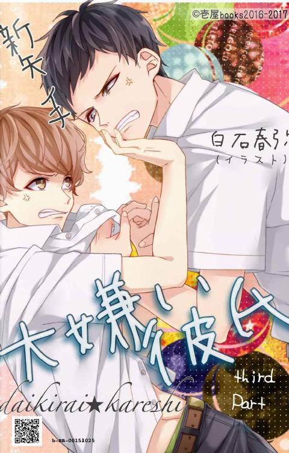

| 大嫌い彼氏 後編 | |
| 新矢イチ | |
| 壱屋books (2017) | |
大嫌い彼氏、後編です。
佐藤蘭 。健全な中学二年生。
好きな物は映画、彼女、少女漫画とエッチなこと。
嫌いな物（奴）は、元幼なじみの山内俳里。通称ハイジ。
顔は良いけど他は最低な性悪男。大っ嫌いな天敵だ。
記憶をなくしてひと月弱。なんだかんだで山内のいる毎日が当たり前になっていて。気付いたときには心のなかに山内の存在が入りこんでいた。
しかし、山内は重大な嘘をついていた。記憶をなくす前の二人は、恋人同士なんて呼べないほど荒んだ関係になっていた。
蘭は、都合のいいセフレのような扱いを受けていた。そして身も心もボロボロにされた揚げ句、「もう俳里と付き合っていけない」と別れ話を切り出したのだ。
けれど、肝心の別れ話の最中に気を失って記憶喪失になり今に至るという、信じたくもない新事実が明らかになってしまった。
当然蘭はブチ切れ。なぜか山内もブチ切れ。
血で血を洗う激闘（？）の末、今度こそきっぱりお別れした。......はずなんだけど。
いつまでも心の中に居座り続ける存在に、絶賛悩まされているナウだったりするわけで。
「クソ山内のボケアホ。今に見てろ。すっげー美女と付き合って、てめーのことなんか見返してやるんだから！」
好き。好きじゃない。心に大きなわだかまりを抱えたまま、二人の恋愛はとうとう最終章を迎えた。
＊
通いなれたコンビニエンスストアのレジカウンターに、ある日からとある男の子の姿をみかけるようになった。最近採用された新人のようだ。
第一印象は、なんか中性的な子だなという感じ。それといかにも人に好かれそうな愛嬌ある雰囲気が、小型犬みたいで愛らしかった。身長はそこそこ。滝よりちょっと低いくらい。
細身だけど、華奢すぎなくて。格好いいけど可愛い男の子。
よく友達と楽しそうにおしゃべりしてたっけ。会話に夢中になりすぎて、よく万里に怒られていたけれど。
最初は、歩くたびふわふわ揺れる茶色の髪が子供っぽいなと思って、印象に残っていた。それからだんだんと目が行くようになって。あの子会いたさに通いつめるようになっていた。 何気なく姿を目で追っていたあの頃から、すでに惹かれていたんだろうなと思う。
四人姉弟の末っ子。上に姉が三人いる女所帯で育った滝は、男と女の不平等さを、嫌という程体験してきた。
「女は怖い」
これが最初に覚えた言葉らしい。物心ついた時には父の膝の上が居場所だった。部屋の隅っこで姉たちのくだらない乱闘を見ながら、ある日ポツリと漏らしたのだとか。
正直、実家を出て男子校に進学するまでの十六年間、滝の人生は地獄だった。
滝綾人は追憶のかなたの日々を振りかえり思う。佐藤蘭に惹かれたのは、必然的な運命じゃないかと。
店に通いつめるうち、彼についてもっと知りたくなった。
いくつなんだろう。時々店に来ている友達は、みんな隣町の学園の生徒だから、多分彼もそうなんだろう。だとしたら、バイト先まで距離あるよな。どうして近場を選ばなかったんだろう？
知りたい。『佐藤』という名前以外のことを。どこに住んでるんだろう。何年生なんだろう。付き合ってる子はいるのかな。
一般論で考えれば、この感情は異常なのかもしれない。しかしこれまで性根の腐った女性としか縁のなかった滝にとっては、性別など障害のひとつにも当てはまらなかったのだ。
好きと自覚してから行動まではさらに急速だった。
その日のうちに務め先の店長に退職申請を出し、その足で彼の店の採用面接を受けた。
昨年まで大型スーパーのチームリーダーをしていたおかげで、即日採用された。
翌々日の初出勤日。アルバイトの『佐藤くん』は、滝を見るや首を捻りこう言った。
『あれ、滝さんてうちでよく水買ってた人じゃない？』
『ああそだね。よくレジ打ってもらってたよね。これからよろしくね』
正直、毎日通うには予算がなくて、単価の安いミネラルウォーターばかり購入していたが、もう少しいいものを買っとけばよかったと本気で後悔した。
『うえー。よくうちで働く気になったよね。言っとくけどここのオーナー最悪だぜ？ 人使い荒いし短気で怒りっぽいし、土日なんか平気で残業させられるんだよ？』
『あはは、どこも似たようなもんだね』
あの佐藤くんと会話してる。それだけで夢見ごこちだった。
いろいろ話すうち、少しずつ彼の事を知った。名前は佐藤蘭。予想どおり、隣町の学園の一年生。
（蘭くん、か）
なんて奇麗な名前だろう。
時間を見つけては懸命に話しかけた甲斐あって、バイトが終了するころにはすっかり滝に懐いていた。実際に話して感じた佐藤蘭は、滝が描いてきた理想と現実、それぞれの断面を、奇麗にすり合わせているみたいだった。
彼を知るほど好きになる。一緒にいるだけで気分が高揚した。もっと側にいたい。この人の隣を独占したい。 バイト中はそればかり考えていた。
しかし数日後。彼の純愛は、見事に玉砕されることとなる。
蘭には現在交際中の恋人がいたのだ。
しかも同じ学園の同級生。そのうえ恋人も、店のバイト生。それどころじゃない。もっと壊滅的な事実が滝を待ち受けていた。
恋人は男だった。
滝と同じく男。同性だったのだ。
彼氏の名前を聞いて、なお驚いた。
あのときの衝撃は、今でも忘れまい。
山内俳里。
その名前はとにかく有名だった。滝も中学のころ、女子づてにうわさを聞いたことがある。近隣の中学に、その有名人が入学してきたんだとか。当時は右から左に聞き流していた情報だが、毎日のように女子が騒ぎ立てるせいで、嫌でも名前を覚えてしまった。
『はあ。ハイジくん今日も格好よかったぁ』
山内俳里は通称ハイジと呼ばれてるらしい。中学生離れした容姿でとにかく格好いいんだと、クラス中の女子が騒ぎ立てていた。
（こいつが、山内俳里......）
一九〇センチ近い長身で、いじった形跡のない芯の硬そうな黒髪。一見すると無造作な感じだが、自然体だからこそ余計に素材の凛々しさが際立って見えるのは確か。特に横に長い切れ長の目には、人を惹きつける何かがあると思った。
『誰、こいつ』
開口一番に言った台詞がこれ。しかもめっちゃ嫌そうな顔で。
『俳里くんあのね、おとといから入った新人さん。滝さんていうの』
『ふーん』
『どうも、よろしく』
『......』
返事もなし。しかも一応の礼儀として差し出した右手さえ、握り返されることはなかった。
男の勘なのか、それとも本質的に失礼なやつなのか。とにかく山内とは、初対面から最悪だった。
あれからもう一年。その間いろいろあった。
自分の気持ちを押し込め、蘭の恋愛相談役になりきっていた時期もあった。でも、最終的に感情を抑えきれず、思い余って蘭に告白してしまった。
『ごめん。俺が好きな人は、俳里だけだから』と見事玉砕したけれど。でも懲りずにバイトを続けるあたり、自分でも相当未練がましいなとは思う。 思うが、簡単に諦められるわけがない。滝が初めて好きになった人なのだから。
蘭が記憶喪失になったと聞いたのは、その矢先のこと。
それもごっそり三年分の記憶を失ってしまったらしい。滝の事はおろか、あんなに大好きだった山内のことさえ忘れてしまった。
それは滝にとって、嬉しい誤算だった。二人の過去に何があったか知らないが、蘭は現在山内をたいそう毛嫌いしている。
まさに願ってもないチャンスが来ている。無論、この機会を逃すつもりなどない。
この数カ月、何度もあきらめようとした。忘れようと思った。でも、蘭以上の理想の相手など、どこにもいなかった。
佐藤がいい。俺は、佐藤が好きだ。どうしても好きだ。
俺ならぜったい泣かせたりしない。大切にする。必ず幸せにする。
ドクドク煩い心音に促され、スマートフォンに表示された番号へ発信する。しばらく呼び出し音が続いたあと、スピーカーからふにゃけた声がきこえた。
『ふあい』
「佐藤？ 俺。分かる？ 滝だけど......」
『あ、滝？ 急にどうしたんだよ』
「あのさ......」
だから、お願いします、神様......。
どうかあと一度だけ、俺にチャンスをください。
＊
「ちょっとあたしの肉まで食べてんじゃないわよ！」
「ふん。これがお前の肉だという確証はどこにもない」
蘭と山内が大ゲンカをしていたちょうどその頃。仁科家では二卵性双生児の兄と妹による『すき焼き肉争奪戦』が繰り広げられていた。
二人とも育ちざかり。早めに夕食をすませたせいか、塾の帰りともなれば小腹もすく。だからこうして兄の部屋で二人で鍋をつつくのも、決して珍しい光景ではないのだ。
にしても、兄は赤のジャージに金髪ドレッド、黒のニットターバンを合わせたヤンキースタイル。
妹は黒のロングストレートヘアを頭の上でひとまとめにして、ゆるめのパーカーにプーマのハーフパンツとこちらもぶっちぎりのヤンキーファッションだ。
傍目にみれば、柄の悪いカップルにしか見えない風貌である。
そして現在。自らのテリトリーにはべらせていた肉をすべて平らげた兄が、とうとう妹の陣地へ箸先を侵略させる所だった。
春菊やしらたきや焼き豆腐ががっちり周囲をホールドする中、兄はいとも華麗な箸さばきで目標とするブツだけを回収していく。
「ああーっ馬鹿!! 二枚も取んないでよ！ あたしほとんど食べてないんだから！」
「のこひてるおまへがわるひ」
兄は誇らしげに肉を頬張り、ふふんと鼻高らかに言った。
「あたしは好きなものは最後に残しとくタイプなのよお馬鹿！」
この馬鹿兄貴。ちょー腹立つわ。
気分転換にと膝にのせていたスマートフォンの画面を開く。
「......あら？」
こんな時間に着信がはいっている。しかも珍しいことに、相手は蘭だ。記憶喪失以前は頻繁にかかってきたものだが、ここ最近は全く。着信もメッセージもほとんどなかったのに。
「どうしたのかしら？」
しかも、呼び出し時間はわずか二秒。
かけ直してみるが、通話中でつながらない。
「何なのよまったく」
間違い電話のような二秒の着信。普段の彼女なら無視していたに違いない。
けれど。
「うーん」
（何かしら。さっきから変に胸さわぎがするのよね）
考えすぎだろうか。これは蘭からのＳＯＳじゃないかと思うのは。
「ねえ、蘭から連絡きてたんだけどさ」
一応頼りにならない兄にも聞いてみようと顔を上げると、肉食動物さながら、鍋中の肉を一心に口に放りこまんとする似非モノノフと目が合った。
「あー馬鹿馬鹿馬鹿！ それ！ あたしのお肉！ 全部食べてんじゃないわよバカ兄貴」
あーもう、蘭のやつ!!
結局着信のことはおざなりに、それどころか微妙に逆恨みしながら肉争奪戦線に復帰する妹であった。
＊
「......？」
瞬間的に妙な寒気が背中を通り抜け、蘭はブルリと震えた。
「もしかして寒い？」
部屋の照明をつけながら滝がたずねてくる。
「んーん、大丈夫」
数時間ぶりに戻った滝の部屋は、やはり殺風景で閑散としている。ふと、向かいの全身鏡に目がいった。
そこに自分が映っている。滝に借りたカーディガンを羽織り、破けたシャツを見られぬように胸元でリュックを抱きしめている、男として実にみっともない姿が。
「......」
（なんか、俺って情けない）
またモヤモヤした感情がこみあげてきて、咄嗟に視線を隣に向ける。
滝と目が合った。こちらはじっと蘭の方を見ていたようだ。
なにを考えてるんだろうか。表情から滝の気持ちは汲み取れない。けれど何か言いたそうで、伝えたそうで、それをあえて押しとどまっている感じがした。
まるで心の中で押し問答してるみたいに、どこかふわりと遠くを眺めている。まあ、目は合ってるんだけど。とにかく不思議な顔だ。
「滝？」
「......ああ、うん。とりあえず着替えよう」
「あ――」
でも俺、着替え持ってないし。
「俺の着なよ。身長も同じくらいだし、合うと思うから」
そういうと隣の部屋のクローゼットから部屋着をもってきてくれた。タオル生地みたく肌触りのなめらかなパーカーとスウェットのセットだ。折り目がついている。新品だろうか。
蘭はありがとうと言うと、それを両手で受け取った。
「なあ滝―。だれか良い子紹介してよ」
シャツを脱ぐ蘭の後ろで笑い声が聞こえる。滝はといえば、ベランダで洗濯物を取り込んでいる最中だ。
「もう少しフリーの時間を楽しんでいなよ。一人も案外いいもんだよ」
それに、佐藤ならすぐに誰かから言い寄られてそう。背を向けたまま、滝はそんな事を言う。
「えー。そりゃないよ。だって俺、元カノにこっぴどく振られたばっかだし」
「そうなの？」
「うん......」
千夏の記憶に紐づいて、山内の思い出がよみがえってくる。またボーっとしてたみたいで、大丈夫、と遠慮がちな滝の声。
「あーごめん。考えごとしてた。うん。そうなの。俺の事なんか最初から眼中になかったって言われちゃってさ」
「そんな子、逆に佐藤が付き合う必要なかったと思う」
心なしか滝の口調が攻撃的だ。でもまあ、今の言葉で救われた。
「そだね」
「そのうちきっと出会えるよ。佐藤の良さをちゃんと分かってくれる人に」
「だといいんだけどさ」
できればその相手は、山内もうらやむ絶世の美女が希望だ。
「滝は？」
「んー？」
「彼女いないの？」
（まあ、いたら俺なんかを泊めてくれたりしないんだろうけど）
しかし、顔よし性格よし優しさ満点の滝みたいな完璧男子を、周囲の女子が放っておくだろうか。
そこは結構前から蘭の疑問だったりする。
その間ベルトを外したスラックスごと、腰から一気に脱ぎ落とした。
「男子校だからね」
「出会いが無いんだ？」
「まあ、そんな所かな」
「へー。勿体ねー。滝なら絶対女の子にモテそうじゃん？」
それはないかな。やはり蘭に背を向けたまま、滝は黙々とバスタオルのシワを伸ばしている。
「俺、女子には意外と冷たいんだよね。まあ、人にもよるけど。一方的に優しさだけを求められると、全力で跳ねのけたくなる」
「はは。滝がそんな事いうと全然説得力ないよな。だってすげーいいやつだし。すっげー優しいし。友達想いだし。山内ならまだしも、滝がそんな事言ったって謙遜にしか聞こえないって」
「それは相手が佐藤だからだよ。うん。俺、女子は......本当苦手かな」
最後に発した聞き捨てならない発言に、同じ男として好奇心が沸いてしまった。
「なんかズバズバ聞いてごめん。滝ってもしかして童貞なの」
「あはは。それはさすがに」
笑いながら振り向いた滝が硬直する。
さっきとよく似たミステリアスな表情だと思った。蘭は不思議そうに首をかしげる。
何だか耳が赤い。よく見れば若干目を見開いてるようで。
小刻みに揺れる視線の動きを辿れば、蘭の胸元あたりを這っているような......。
と思ったら、滝の目は貧相な胸元のあたりからから腰元へ移動した。
（あ......！）
その時、蘭は気付いてしまった。
自分がいま、どんな格好をしているのかを。
そうだ。今日はラブリーなクマ柄のパンツを履いてたんだった！
しかも股間の所からファスナーをこじあけて、クマさんが「やっ！」と顔をだしているデザイン。
最初はなんちゅう趣味の悪いパンツだと白い目でみてたんだけど。履いてみると、これがなかなか。体形にぴったり貼りつくおかげかチンコのポジションが絶妙な場所に収まってくれるのだ。
デザインこそ最悪であるが、蘭にとって『俺的最強チンポジパンツ』ベストスリーにランクインするほど、優れたフィット感が得られたのだ。
そのため最近はお気に入りの一枚になっていたんだけど。
まさかこのパンツを履いてる今日に限って、滝に半裸姿を見られてしまうなんて。
「あ、ごめん！ これ、ホント俺の趣味とかじゃないから！ なんかもう、見逃して」
「......あ、え？ ああ......うん」
急に夢から醒めたみたいに滝が返事する。
「ホント、マジでこの柄ぜんぜん俺の趣味とかじゃないんだけどさ。なんかチンコの収まりがちょーいいんだよね」
ウェストゴムをめくると、蘭はジュニアをのぞきこむ。
「うん」
一拍おいて、滝から抑揚のない返答。
(うーん。もしかして滝って下ネタ無理系？ 俺、さっきの童貞の下りから軽く引かれてたりして)
「クローゼット漁ってたら見つけちゃって。試しに使ってみたらさ、これが結構履き心地いいんだよ」
(あー。どうしよ)
ゴムの所をピラピラさせながら考える。
しかし一度開いた口は止まらず。考えるうちから、どうでもいいチンポジ論議が次々と口を吐いて出てきてしまう。
（駄目だ全然ウケてないじゃんか）
しまいにはアンダーヘアをいじりながら、しどろもどろにチンコの居場所がどうのこうのと喋り倒す始末。
「うん」
滝からは、相変わらず数秒遅れの返事がくるだけ。どうしよう、これから居候になるってのに、そろそろ雰囲気的に危険だ。
「まあ、ちょっとガキっぽいけど機能性重視でいいかなー......て......」
おそるおそる顔をあげた蘭は、次の言葉をゴクリと飲み込んだ。
いつの間にやら、滝がそこまで迫っている。なんだか思いつめた顔をして、こちらへどんどん近付いている。
「――え、滝？」
五十センチ、三十センチ、二十センチ。考える間もなく、瞬く間に距離が縮まっていく。だけど目は合わない。滝はずっと下を向いている。
「はあ......」
漬物石よりも重ったるい溜息が聞こえた。それから。ゆらりと舞った両腕が、蘭を頭から包みこんだ。
ピアニストのように細長い指先が髪の毛をくしゃりと撫でて、肩から背中へ指を滑らせる。
抱きしめられてるみたいだ。
みたいじゃなく、抱きしめられている。ラブリーなクマ柄のパンツ一丁でそこに立つ蘭を。
「............」
どう反応すればいいのか分からず、ひたすらその場に固まっていると。
「――うん。佐藤、早く服を着ようね。すごく......寒そうだから」
付け足すような感じでボソリと呟く。
「え、あ、ああそゆこと。うん、ごめん」
「や、いいんだ全然......ていうか俺が」
「え」
「何でもない。ごめん」
滝の様子がへんだ。
でもその理由を聞く前に、今度はけっこう強めの力で引き離された。すぐ顔を反らすとまた「ごめんね」と一言。床にあったパーカーを強引に蘭に押しつけ、滝は「やっぱシャワー浴びて来るね」とバスルームへ行ってしまった。
＊
「はあ......」
シャワーに打たれながら、滝は両手を壁につけうなだれていた。
頭から蘭の裸が消えていかない。きょとんと首をかしげて滝をみる彼の、このうえなく悩ましい裸体が。
佐藤は、気付いているんだろうか。いや、あの反応ではきっと気付いていないだろう。
「......」
キスマークがあった。
身体中に。
首や胸元、桜色の乳輪のあたりまで。山内の付けた痕だろう、真っ赤な蕾を思わせる斑点が、無数に蘭の全身を飾っていた。
ボタンの弾けとんだシャツに、全身に及ぶキスマークの痕。それを見ただけで、山内に押し倒される蘭の映像が脳裏に映しだされてしまった。
あれを見て気付かされてしまった。今までは、ただ好きだという感情だけが暴走していたことに。
「苦しい......」
まるで初恋の胸の痛みに驚く小学生の気分だ。好きな人を前に、初めて知る感情をただ持て余すしかできない。
滝のなかで何かが弾けてしまった。
罪悪感にも似たそれがなんなのか。考えなくとも、男であるが故の反応が、すべてを物語っている。
（佐藤に欲情してしまった）
今夜の出来事は、佐藤にとってどんなにか辛い体験だったか。その痛みを、少しでも癒してあげたい。そう思っていたはずなのに。抑えきれない衝動が自らにも宿っている事を知ってしまった。
（俺、あともう少しで、押し倒す所だった）
「............」
治まらぬ興奮が、天井を向いて悲鳴を上げている。髪の先をつたう水滴が、ぽたりぽたりとそこに垂れる。
もう五分近くこうしているが、蘭の感触は消えそうにない。
（佐藤の、体）
ほどよく骨ばって、それでいてしなやかで。しっとり吸いつく肌のハリが心地よかった。
つい少し前まで山内だけのものだった。あの体に吸いつき、唇を奪い。体を開かせて、求めるがまま。おそらくこの上なく心地いいだろう優しくて甘い感触を、たった一人で味わっていたに違いない。
......当然といえば当然だ。男同士だからと今までそういう想像をしなかった自分が、浅はかすぎたのだ。
仮にも二人は少し前まで恋人同士だったんだ。そりゃ、するだろ。エッチくらい......。
ドクンッ。
滝の分身が跳ねる。
（駄目だ。気持ちが追いつかない）
経験はある。一応にすぎないが。結構前に興味本位でなんとなく付き合ってみた彼女がいたから。
求められればキスをしたし、愛撫もセックスもした。けれど一度も我を忘れることはなかった。こんな風に、頭が逆上せることもなかった。
彼女はよく、滝を独占したがった。用事が無くても連絡を義務付けて、無駄に一緒にいたがった。キスや性交渉も、普通じゃないシチュエーションでそれを求められた。
まだ人気の多い時間に空き教室に呼びだされ、「したい」と求められたこともあった。
いま思えば、あれは彼女なりの愛情の確認方法だったのかもしれない。なりふり構わず滝を求め、気持ちを確認したかったのかもしれない。
だけど、滝には全てが疑問でしかなかった。求められるばかりの関係に嫌気もさしていた。それは決して愛ではなかったのだから。
その内心を悟ったのか、関係は長くはもたなかった。
『なんか、思ったのと違った。彩人って本当に人を好きになったことあるの？』
別れ際にこう言われもした。
彩人って見た目だけだね。きれいな彼氏を連れてると優越感あるし、いいなと思ってたけど、正直いって全然面白くなかった、と。
そう一方的に関係を絶たれても、悔しくはなかったし、これでいいとさえ思っていた。それどころか彼女の束縛から解放されて、安堵すらしていた。
なんとなくだが自分でも理解している。俺は女という生き物が嫌いなのだろうと。
姉たちがそうなように、女性はいつも形以上の愛を欲しがる。形だけの交際とはいえ、自分なりに尽くしたつもりだ。だけど彼女たちは、いつも足りないと文句をつける。
正直、エスカレートしていく欲求にこれ以上付きあうつもりもなかった。
確かに、俺は自己中心的で女嫌いの、ひどく冷徹な人間だ。
普段はそれを極力押しこめ、誰に対しても穏やかに接するように努めていたつもりだが。どうやら態度に表れていたらしく、その裏性格も完璧には隠しきれなかったようだ。
そう客観的に評価した自己分析がいま、がらがらと音をたてて崩壊しかけている。
冷徹で淡泊な滝彩人は、ある人の前だけは全く違う一面を見せることを知ってしまった。
彼と居ると、自分が自分ではなくなってしまう。嫉妬深くて身勝手な裏の性格が、無意識に全面に出てきてしまう。
ただの一度も煩わせたことのなかった枯渇した欲望が、長年ためこんだマグマとなって滝の内面を炙りつける。
（苦しい......）
奇麗な体だった。
あまりにも無防備なそこからは、アンダーヘアがチラリとのぞいていた。こげ茶で柔らかそうなそれは、うっすらした茂みではあったが、彼の愛すべき当体の一部に他ならない。
あのとき滝は、蘭から目を反らせなくなっていた。それどころか無意識に足が前へ進んだ。計算の無い無防備さが愛しくてたまらなかった。
ドクン......ドクン......ドクン......ドクン......ッ。
体の中心が熱を帯びる。
（佐藤は、どんな顔をして山内に抱かれているんだ。男の子らしいあの声が、どう変わるんだろう）
脳裏で蘭がもだえている。四つんばいで腰を持たれ、妄想か現実か分からない小さな双丘は、その中心部を真っ赤に熟させ、激しく収縮しながら男を受け入れていた。
『あ......っぅ。ん、んんっんふっ』
あらぬ想像は、幻聴まで招いた。上ずった愛らしい声が、時々すすりなくようにして喉から漏れている。山内の腰遣いにベッドのスプリングはギチギチと限界までしなり、なきむせぶ蘭を小刻みに揺らした。
滝のそれは獰猛に上を向き、痛いほど脈っていた。先端は触ると弾けそうなほどパンパンに膨れ、血気だった赤色に染まっている。
（佐藤......ごめん）
妄想の中の蘭に謝罪する。
滝は右手を滑らせ、自身を強く握りこんだ。そして蘭の顔を思い描いた。ぞくぞくと寒気を催し、熱い吐息が漏れる。
親指で先端を擦りながら無我夢中で上下に扱った。
想像以上の快感が、ブワリと全身を襲った。
「......っは」
身体中の血液という血液が、一瞬にして右手の中へ集まっている。
生き物を扱うように上下になぶる。例えようのない快感がねっとりと脳裏をむしばんだ。
しばらくすると、すぐに破裂しそうな勢いで快感が上り詰める。
「......っ」
佐藤......。
妄想と快感がないまぜになる。右手が震える。大切な人を護るためのこの手が、大切な人を汚している。
罪悪感で消えたくなる。
頭がジンジンと痺れている。意識がない。真っ白でもうろうとしていて。見えるのは、蘭のどろどろに溶けた姿だけだ。
「――っク、......っ」
ごめんと呟き、尚も必死で扱う。ぞわぁっと寒気が上り詰め、本能的な何かがせり上がってくる。あとは無我夢中だった。必死で追い立てるうち、汚れた右手から白濁が飛び散る。
「ウッ」
あまりの刺激の強さに、出し切るまでに幾度も痙攣した。
腰を震わせ、歯を食いしばり。戸惑いながらも、初めて知った自慰の快感に、確かに滝は溺れていた。
しばらく胸を上下させ、息をととのえる。茫然と白いタイルを見つめたまま立ちすくんでいたが、ようやく頭は冷静さを取り戻しつつあった。
＊
しばらく呆然と鏡の前の自分を見つめていた。
若干目が尖っているが、別段変わった所はない。だがツンと澄ました顔の奥に、蘭に欲情したもう一人の自分がいる。
妄想とはいえ、好きな人を汚してしまった。自らのあさましいまでの貪欲さと滝綾人という人物像が、頭の中で上手く交わらない。
なに食わぬ顔をしてそこに立つ自分を見ていると、無性に罪悪感だけが募った。
リビングに戻るころには小一時間が経っていた。
「佐藤？」
ソファの上に、縮こまって眠る蘭がいた。
さっき取り込んだバスタオルを体に巻き付けている。
「ごめんね。寒かったのかな」
時刻は夜中の一時を回っている。精神年齢が十四歳なら、寝入ってしまうのも無理ない時間だ。
今日はいろいろなことがたくさん起こりすぎた。
怒って泣いて喧嘩して。今日の君は、まるで俺の夢物語にとつぜん現れた主人公みたいだった。
山内と決別し、行く宛てをさがして闇の中を彷徨っていた君は、こんな俺を頼ってくれた。
友達としてだろうけど、大好きとまで言ってくれた。それでもすごく嬉しかった。
もし、二人の過去を蘭に密告しなければ、もしかしたら今ごろ二人はよりを戻していたのかもしれない。
蘭の頬を撫でる相手は、自分じゃなかったかもしれない。
けれど、後悔はしていない。このまま黙って見過ごすことなんて出来なかった。
俺がどんな下心を抱いて君に接しているか。それを知られてしまったら、どう思うだろうか。
君は今日の山内みたく、俺のことも嫌いになるだろうか。
もし、これが原因で佐藤との仲に亀裂が入ってしまうなら。何もせずただ隣で友達のふりをして、じっと機会を待っていた方が賢明だったのかもしれない。
それでも俺は行動することを選んだ。
理由は簡単だった。できる行動を惜しんで、のちに後悔したくなかったからだ。
少しでも望みがあるなら、わずかな確率でも諦めたくない。
「う......っぐす......っ」
はいりぃ......。
葛藤を胸に閉じこめ、静かに寝顔を見つめていた矢先。
蘭がとつぜんグズりだした。子犬みたいに鼻をグスグスとすすり、山内の名前を呼んで泣いている。
「は......っりぃ――」
「佐藤」
話しかけるが返答はない。
そっと前髪をすくい、額を優しく撫でてみた。
わずかにビクリと反応したが、やはり目を覚ます気配はない。
蘭はまるで、額に触れた温もりを捜すように、手を左右に交錯させている。
「......」
『俳里』、か。
最近は『山内』と、名字で呼ぶ所しか見ていない。だとしたら、これは佐藤の潜在的な意識が眠ってるうちに現れてるのかもしれない。
冷静に分析しながら考える。『俳里』と力なく呼ぶこの声は、記憶の底で眠っている十七歳の佐藤蘭なんじゃないかと。
「佐藤......」
ソファをはう華奢な手の甲に、自分の指先をそっと乗せる。
「や――」
一瞬、ビクリと肩が跳ねた。息を潜めているようだが、まぶたは閉じたまま。しばらくするとまた山内を呼びすすり泣いた。
「佐藤」
か細い指先を両手で包みこむと、滝はゆっくりと胸元まで引きよせた。少しひんやりした手の甲に頬をつける。
俺がいるから。
うわごとのように呟き、その柔和な感触に目元を緩ませた。
滝の指先は、なだらかに蘭の腕を下る。手の甲から二の腕、そして首元へ。滝はゆっくりと蘭の寝顔に顔を寄せる。
山内が憎い。蘭を苦しめるあの存在が憎い。疎ましい。
あいつがいなければ、佐藤はきっと......。滝はそっと蘭の唇に同じ部分を重ねた。
柔らかい果肉のような表面は、しっとり濡れていて。そっと舌を出して拭うと、思ったとおりでしょっぱい。
「佐藤......」
駄目だと制御する念はあったが、止められなかった。
憑りつかれたように、夢中でそこをねぶった。
「う......っん」
止められない。止まらない。
口付けは、蘭がうとうととまぶたを開けるまで続けられた。
「――れ、滝......。あ、ごめん。おれ、寝てた」
うん、と小さく唸って、蘭がまぶたをこじ開ける。寝ぼけているのか、目をごしごしと擦りながら滝の方をぼうっと見ている。
「うん。寝てたね」
ほんのり濡れた唇の表面を舐めながら、滝は涼やかな笑顔でニコリと笑った。
＊
あれは蘭と両想いになってすぐの事。
多分、俺らが一番恋人らしかった当時の記憶だ。
『うわー。なんか緊張する』
ラブホテルの隅に背中を向けて座る蘭が、シャツを抜き捨てながらポツリと漏らした。
さっきまで鼻歌を歌いながら風呂に入ってたくせに。山内は胸の内で毒づいた。
お互いシャワーを済ませた後は、しばらくベッドでじゃれ合い遊んでいた。で、プロレス技とか掛け合ってぐちゃぐちゃになるうち、至近距離で目が合い、一気にムード全開。そして今に至る。
『何だよ、珍しく素直になっちゃって』
『珍しくないし』
隣で同じく服を脱ぎ捨てながら、シャツの下からあらわになる真っ白な素肌に釘づけになっていると。山内の視線を察したのか、蘭がぱあっと頬を赤らめ、胸元を隠そうとした。
それを見てニヤニヤほくそ笑む。
『何。今更恥ずかしいの。かわいいね』
『は、ばっ、おっまえ変な笑い方してんじゃねーよ！』
どうやら付き合って最初のエッチが本当に緊張しているようで。蘭は髪の毛をネコみたいに逆立てながらぎゃーぎゃー叫んでる。
それはそれは、めっぽうかわいい。
『ふっ』
ういやつよ。
やべーな。もうニヤニヤ止まんねーんだけど。
昨日から山内にとって夢のような時間が続いている。
中学校帰りに駅前で合流する所まではいつも通りだった。のんびり街中を歩きながら途中で立ち食いして、ゲーセン寄って、マック寄って。道すがら、客引きしてるホストのお兄さんとダベって帰る。
十一月ともなれば、夕方十九時はすでに薄暗い。最近はこの時間になると、手をつないで帰っていた。いつもなら、このまま蘭を家に送ってバイバイなんだけど。
『また明日な』ときびすを返そうとした時、ふいに呼び止められた。
『......なあ、お前の言葉、今でも信じていいの？』
『え？ なに？』
『だから！ お、俺のこと好きって......、あーもうやだっ。やっぱやめた』
『は、何。何だよその前振り。すげえ気になるんだけど』
この時、なんとなく蘭の様子がいつもと違うことを感じていた。頭をわしわし掻きつつ、終始困ったようにボヤいてる。
しかも制服の裾を握ったまま、山内を見上げては戸惑いがちに目をふせるのだ。
『てか、全然、すげえ好きだし。最近は普通に友達みたいな態度とってるけど。お前の事、一度も諦めたことないから』
何だろう、このやりとり。蘭が何を聞き出そうとしてるのか、何を言いだそうとしてるのかも分からない。先の見えない質問に、気持ちばかりが焦った。
内心、覚悟していたのだ。もう関係を終わりにしないかと言われるのでは、と。
『......それ、本気なのか』
蘭はなおも問い詰めてくる。真剣な顔つきで、山内の気持ちに変わりはないのかと。『当たり前だろ』だから即座にそう返した。
『あ、遊びとか』
『なわけねえだろ！』
逸る気持ちを抑えられず、思わず巻き舌でまくし立ててしまった。そのせいか、しばらく二人の間に重苦しい沈黙が流れる。
ほんの数秒程度の時間だったが、ひどく重く長く感じられた。
『......別れてきた』
『え？』
独り言みたく蘭がポツリとなにか言った。
『昨日、千夏と別れてきた』
『......』
なんだって？ 全く予想外だった言葉に、山内は思わず呆けた顔で聞き返していた。
『俺、も。お前といる方が、楽しいから。もっと一緒、いたいなって』
『......』
嘘だろ。
声にならない声が、ワンワン頭のなかで狂ったように響いてる。動機はバクバク跳ね上がり、握りしめた拳の内側でじっとり汗が滲んだ。
さっきまでの会話を何度も思い返すが、頭がついていかない。てっきりフラれるんだとばかり思ってたせいか、蘭の言葉が悪い方にしか変換されないのだ。
蘭は言葉を続ける。うつむき加減に、頬を夕焼け色に赤く染めて。
『俺が女扱いされるのはまだ不服っつか慣れねーけど。ヤるときなんかこっぱずかしいし......っ。でも、そんなん差し引いても、山内じゃなきゃ、やなんだよ、いろいろ......』
そっぽを向いたまま、唇を尖らせてそう一言。照れてるんだろうか、耳が真っ赤だ。
『......』
『あーもう！ 男だからって軽いノリでエッチとかすんじゃなかった。何でお前相手にマジ告白してんの......超ハズいんだけど』
そう言ったアイツが、今は恋人として自分の隣にいる。
本当は、想いが叶うと思っていなかった。絶縁状態だった仲がもう一度修復できただけでも奇跡だと思っていたから。
本当いうと、内心すこし後悔していた。お互いの関係にけじめをつける前に、肉体関係に及んでしまったことを。
出会った当初、蘭は彼女のことを一途に想い大切にしていた。それを知っていた上で何度か手を出し、最終的に性的関係に持ち込んだのは自分だ。
完全な横恋慕だと自覚はあったが、好きという感情をどうしても抑えることができなかった。
蘭は遊びじゃないかと勘繰っていたが、むしろ自分のほうが遊ばれてると思っていた。
俺が男だから。アイツはキスもセックスも浮気って括りで考えて無かったんだと思う。というか、昔の腹いせにちょっと遊んでやろうとか、良からぬ考えも少しはあったんだろう。
『あーあ。本当はちょっと遊んで捨ててやるつもりだったのにな』
そこへ絶妙なタイミングで蘭がボソリと言った。
『おい』
『なんでマジになっちゃったんだろ』
でもお前が隣にいなきゃ、毎日がつまんないんだよな。焦点なくぼうっと床を見つめる蘭の両手は、いつしかシャツの裾をぐしゃぐしゃにつかんでいる。手元はかすかに震えていた。
『......』
『てか、昨日から俺ばっか告白しててムカつくんだけど。お前も好きって言えよ』
その言葉で完全に理性がふっとんでしまった。その場で蘭を押し倒すと全身あます所なくキスを繰りかえし、脱ぎしぶっていた上着もパンツも、すべて取り払った。
蘭の方も、最初こそ少し抵抗したものの、すっかり目がとろけてる。繰り返し口づける山内をじっと見つめ、恥ずかしいのか、時折髪の毛をぐしゃぐしゃにひっつかんでいた。
失くしてなるものかと全身にむしゃぶりつきながら、好きだと数えきれない位は言った。でも蘭はもっと聞かせろという。
まだまだ足りない。そう言いたげに肩に腕に爪をたて、甘ったるく山内を呼んでいる。そのしぐさが愛しくて、どうしようもない感情に何度となく胸を痛めつけられた。
『マジで好きだから』
絶対お前だけだから。
甘ったるく漏れ出す吐息とともに何度も想いを伝えた。
やがて唇は下半身へ下る。その中心部で待ちわびたように
愛らしく起立した蘭の昂りを口にふくみ、大切に大切に舐めずり吸う。ぽってりエラの張った小さなくぼみを舐め回してやると、気持ち良さそうな溜息がもれた。
裏筋はとくに気持ちがいいみたいで、舐めるとビクビク体が跳ねる。だからその部分は特に入念に、丁寧に舐めた。
『あっ、ううっ。山......は、いり――』
何度となく女とつながり合ってきた、蘭の大事な肉芯。いまは俺の口に独占され、愛くるしくもだえ震えている。
これから、この体の全部が俺の物になるんだな。マジで俺の物になってくれるんだな。
恥ずかしそうに顔を隠しながらも、前戯に夢中になる蘭の姿が愛しくてたまらない。
これ以上欲しい物はなにも思い浮かばなかった。驚くほど全てが満たされ、かつてない幸福感が全身を覆った。
『俳里......俳里ぃ』
気が付けば、我を忘れて蘭とのセックスに没頭していた。
もう木枯らしが吹き荒れる季節なのに、全身にびっしり玉のような汗が滲んでる。
それは蘭も同じだった。いつもはサラサラと柔く心地いい前髪が、べったり額にくっついてる。それを何度も掻きあげ、肌をなめた。
いつしか抵抗なく山内のすべてを受け入れるようになった後孔には、極限まで成長した分身が根本までぎっりと咥え込まれている。
最初はゆっくり。壊れものを扱うように、時間をかけて抜き挿しを繰りかえした。体の中心部に奔る甘ったるい快感が、じわりじわり脳裏を洗脳する。やがて夢中で互いを求めあう。
『う......っあ！ そ、そこ、そこもっといっぱい......』
蘭が催促する。山内の腰遣いも激しさを増した。ガツガツ骨と骨がぶつかる位、激しく互いをぶつけ合った。
奥をかき混ぜるたび、蘭は戦慄き、気持ちよさそうにあえぎ乱れる。
だから必至で歯を食いしばり、目いっぱい愛を与える。
蘭は何度吐精しただろうか。覚えてない。ただ、やるせない表情で前後に揺れる姿を見るだけで、言葉にできない感情に全身がうちのめされた。
蘭の絶頂を見ている間、山内も幾度となく射精間際まで追い詰められた。危うく達しそうになっては動きを中断し、また腰を振っての繰り返し。限界はすぐそこまで来ている。
最後は騎乗位で、蘭の顔を見上げながら一緒に達した。声だけで快感が倍増し、手も足も力が入らず、ただずっと震えていた。
『うあー。腰、いってえ』
それから数分後。ようやく冷静にもどった二人はまだ布団の中にいた。さっきまであんなに素直だったのに、事が終るや否や激しすぎなんだよとかなんとか口を尖らせて言ってくる。
『あー、今すっごい男であることが恨めしい。なんだよこの鈍痛。いってえ』
『腰撫でちゃろうか』
そう言うと、すぐにすりよってきた。
『あー、もっと下さすって......そこそこ』
胸元にへばりつき、蘭が気持ち良さそうにぼやいてる。お互いパンツも履いてないせいであらぬ部分が当たっているが、それも嬉しいのであえて何も言わないでおいた。
『山......俳里』
『ん』
こいつさっきから俺の名前を山内から俳里って言い直してやんの。ちょうかわいいいんだけど。
突っ込みたいが二度と名前で呼ばれない気がしたので、これもあえて触れないでおく。
『本当に俺のこと好き？』
『好きだよ』
なぜだろう。率直に気持ちを告げたはずなのに、顔つきがさっと不機嫌そうに曇ってしまった。
『もっと心に響く言い方してよ馬鹿』
『......すっげー俺なりに心こめて言ってんですけど』
『じゃなくて言い方！ ツバサみたいなかっけーセリフとかさ。やっぱ彼氏としてはこういう場面で聞きたい訳よ』
ああ。山内は思う。
そういやコイツ、少女マンガオタクとか言ってたっけ。
漫画より活字派の山内には、蘭の憧れる男キャラの歯の浮くようなセリフの良さがどうしても理解できない所なのだが。
『好きです』
『うわ。なんだそれ。全然気分上がんないし』
『何なんだよ』
こっぱずかしい台詞を二度も言った挙句の反応がこれ。蘭のえらくつまらなさそうな目。
『もういいよ。お前に急に理想を押しつけた俺が馬鹿だった』
『あー、じゃあ俺の今日までの軌跡を語ってやろうか』
『は』
『過去の俺は、蘭に嫌がらせばかりする嫌なやつだった』
『知ってるし』
だって俺、俳里のこと大嫌いだったもん。
辛酸な一言に早速くじけそうになったが、負けじと続ける。
『蘭に絶交されて、俺はますます忘れられなくなった。毎日お前のことばかり考えてた。そういや手紙も何通か書いたな』
『え、マジで。俺に手紙書いてたの？ そんなん初耳なんだけど』
笑われると思ったが思いのほか嬉しそうだ。
『で、何年かぶりに蘭と再開して、彼女連れてんの見てすっげー嫉妬した。なんだあの女って。そっから自分の気持ちに気付きだして。正直やべえなって思ったけど、もう抑えられなかった』
ここら辺は蘭にも話した気がする。なんかケラケラ笑いながら聞いてるが。
どうやら当時の彼女、千夏に嫉妬していた事が今考えるとすごく可笑しいらしい。その理由は後から話すから続けてと言われ。
『それから夏休み終わるまでめちゃくちゃ悩んだんだけど、やっぱお前が好きってことしか頭になくて。学校はじまってから、すっげー勇気だして蘭の家の前で待ってたんだよな』
『お前、あの時イキナリ告ってきたよね』
『イキナリじゃねーし。俺の中ではそこに行きつくまでかなり時間かかってんだぜ』
『俺さ、正直ちょっと引いたよ。最初は新手の嫌がらせかと思ったし』
『......』
そういえば、今度は千夏に手をだすつもりかとか、何の罰ゲームかとか、いろいろ言われたな。
『まあ仕方ねーよな。過去に散々嫌われまくってるわけだし。けど、今は最後までお前を諦めなかった俺を自分でたたえたい』
そのお蔭で、蘭がここにいるんだから。
胸の中のその人の頭を、愛おしそうに撫でながら告げる。蘭と目が合った。すごく嬉しそうに笑ってる。たまらなくなって顎を持ち上げ、唇に吸いついた。
『ん......っはい、り』
『はあ。何か、今でも夢みたい。寝て起きたらお前がいなくなってるとかないよね』
『――ないし』
『駄目、好きすぎてつらい』
蘭がいる。俺の隣で笑ってる。それだけでも嬉しいのに、今日からはもっと特別な存在なのだ。
たくさん障害を乗り越えてきたせいだろうか。今はまるで結婚式前夜の新郎みたいな気分だ。
『俺も、俳里に出会えてよかった。ていうか、俳里がいなきゃ寂しくてどうにかなっちゃいそう』
ありがとう。いっぱい好きって言ってくれて嬉しかった。
蘭が満足そうにほほ笑む。
やっぱ辛い。好きすぎて、幸せすぎて辛い。
これ以上ないくらい幸せで充たされている。いまは小さなとげに射され、わずかな痛みが生じることすら怖くてたまらなかった。
知らなかった。自分の中に、こうももろく弱い部分が存在することを。
『あー。なんか俳里に告られてムラっときちゃった』
『ふはっ。猿かよお前』
『彼氏のこと猿とか言うなよ』
『さーる』
『言うなや！』
こうして毎日、蘭が隣で笑ってくれますように。どうかこの幸せが、これからもずっと続きますように。
晴れやかな未来を想像し、二人の唇はもう一度ゆっくり重なり合った。
＊
夢か......。
フローリングの上で山内は目を覚ました。冷たい床板に背中の熱を奪われたせいか、ほどなくブルリと寒気が込み上げる。時刻はそろそろ午前四時。あれから三時間ちかく意識を失っていたようだ。
「......」
蘭。無意識に名前を呼んだ。けれど返事はない。
受け入れたくなかったが、やけに広く感じる部屋に独りでいると、嫌でも現実を突きつけられる。やっぱり、アイツはもうここにはいないんだと。
蘭が出て行ってしまってから、幸せだったあの頃ばかり思い出している。どうしてこうなるまで、気付けなかったのだろう。どうしてあんな酷い事をしてしまったんだろう。後悔しか出てこない。見上げた天井がぼやけてくる。苦しくて両目を覆った。
蘭、ごめん......。嘘ついてごめん。今まで傷つけてごめん。
壊れたテープレコードのように繰り返すが、その言葉はもう届かないのだ。
ずるずると鼻をすすってまた泣いた。
会いたい。蘭に会いたい。あと一度でいいから、やり直せるチャンスが欲しい。
蘭は学校に来るかな。
来ないだろうな、きっと――。
顔を覆った両手の間から、溜息だけが延々と漏れていた。
＊
ちょっとちょっとちょっと！ たった一晩で何があったのよ、どうなってんのこれ!?
すがすがしい秋晴れとなった朝。仁科家の洗面所前で歯ブラシ片手に発狂する妹の姿があった。ついさっき、ようやく蘭と連絡がついた。
『俺、山内と別れたから』
開口一番に言ったセリフがこれだ。
俺、あの家出てきた。今は滝と一緒にいるんだって。
（な、なななななななんですって！）
昨晩、二人が肉の取り合いをしている間に何があったというのか。
しかもよりによってあの『タキ』と一つ屋根の下で過ごしているなんて。
何があったのか問い詰めようとしたが『充電が切れそうだから』と一方的に通話を切られてしまった。
数十分後。今度は蘭から長文のメッセージが数件に分けて入ってきた。それを見て、昨晩の間に起こった出来事のすべてを知った妹である。
どうやらタキが二人の過去の関係を暴露したらしい。それが発端となり大ゲンカにもつれこみ、破局したあげく蘭は家出。その後の経過は言うまでもない。
「タキめ......。やってくれるわね」
山内の方は、一向に反応がない。
蘭がライバルに奪われたという一刻を争う危機のなか、一体どこで何をしているんだ、あの馬鹿は。
（ハイジってば何をやってんのよ！ さっさと電話くらい出なさいよ全く！）
もし、タキがもう一度告白したら。今度こそ、どうなるか分からない。蘭の怒りは本気なのだ。勢いにまかせ、気持ちが流れてもおかしくない状況である事は確かだった。
そんなこんなで気を揉みまくった妹は、登校するや二人のクラスへ向かったわけである。
「うらぁぁぁ！」
いきり立ってドアをばんと開ける。教室の隅で、机に突っ伏す山内の寂しそうな背中が見えた。蘭は、見当たらない。
「くらぁぁあぁ！」
妹はズカズカ教室へ押し入ると首根っこを持ち上げた。まるで人形みたいに首をダランと垂れ下げ、頭がぐにゃりと垂れ下がる。
「ハイジ！ あんた何やってんのよ！」
と、その顔を見て、般若のごとき形相が、はっと固まった。
やだコイツ、泣いてんの。
山内は、ぼうっとあさっての方向を見つめ涙を流しているのだ。お世辞にも格好いいとは言えない、なんという情けない表情だろう。
あのいつものイケメンはどこへいったのか。ふにゃけた案山子みたいな顔だ。
「蘭――」
山内は「痛い」とも「やめろ」とも言うことなく、ただポツリと蘭の名前を呼んだ。
想定していた以上の落ち込みぶりだ。
本当は一発といわず二、三発は殴ってやりたかったが。この顔を見る限り、山内も相当反省してるようだ。彼は彼なりに、思い余った行動を心から悔いているのだろう。
それにしても腹は立つもので。
「この馬鹿！ 今さら後悔したって遅いのよ！」
結局バシンと後頭部を平手打ち。衝撃でべちゃっと机に頭を打ち付ける。
しかし次の瞬間、山内はとつぜん息を吹き返したかのようにバッと顔を上げたのだ。
その場にいた生徒数人と妹がつられて振りかえる。
「あ、蘭」
ロッカー側の入り口から、ちょうど蘭が教室に入ってくる所だった。
どうしてか他校の制服を着ている。見覚えのないワイシャツにブルーとグレーの格子柄のスラックス、上着のかわりにしているのは、紺色のカーディガン。
こちらも山内に負けず劣らずひどい顔で、目の下なんかはぱんぱんに腫れている。
妹と目があうとぶっきらぼうに「おはよ」と一言。山内には目もくれず声もかけず、すぐそっぽを向いてロッカーに向かう。妹は気付かなかった。その時、まるで夢遊病患者みたく山内がたちあがっていた事を。
「体操着取りに来ただけだから。すぐ帰るし......」
蘭の声が途中から小さくなる。一拍おいて妹も山内の異変に気付いたがもう遅い。さっきまで隣でうなだれていた案山子が、いつの間にやら蘭の近くまで歩み寄っている。
「んだよ」
「ごめん」
そういうと有無を言わせず蘭を抱き寄せる。
「っにすんだよ......っ」
抵抗を諸ともせず、両腕はいっそうきつく背中に回された。肩口から蘭の顔が覗く。今にも泣きそうな顔をしていた。
記憶をなくす前の蘭によく似ていた。よくあんな顔で山内の背中を見つめていた。
大好きで大好きでたまらないのに想いが伝わらないと、よく落ち込んでいたっけ。
（なんか、複雑だわ......）
今の二人は、あの頃と決定的に違う所がある。それは、山内が人として、少しずつ成長していること。あの背中を見れば分かる。昨晩の事をどれほど後悔したのだろう。どれほど蘭に会いたかったのだろう。抱きしめて離そうとしない後ろ姿を見ているだけで、その気持ちが痛いほど伝わってきた。破局してしまった今になって、二人はようやく、同じ想いを共有し始めているのだ。
(なんて皮肉なのかしら)
今回はそこにタキの存在も関わっている。それが山内の耳に入っているのかは、分からない。
第三者として、どう二人の間に踏み込んでいいものか、妹は迷っていた。
「いい加減退けよ、バカ野郎......!!」
すでに教室中の視線が二人に注がれていた。
「俺が悪かったんだ」
頼むから、戻ってきて。
掠れ掠れ、情けない声で山内が呟いた。蘭の顔付きが一変する。
「んだよ、今更謝ってんじゃねえよ、もう遅いんだよ」
「蘭......っ」
「うるせえよ!!」
山内を思い切り突き飛ばし、蘭が教室を飛び出した。すぐさま山内が後を追った。
息つく間もなくドアがピシャリと閉まり、教室内は声もなく静まりかえった。
その場に取り残された妹も、その場に立ちつくすしかなかった。
＊
「蘭、待てよ！」
二階の踊り場にさしかかった所、追ってきた山内に腕を捕られる。
「っなせよ！」すぐに振り払おうとしたがそれより早く腕を引かれ、また抱きしめられる。
それでも抵抗し手足を暴れさせたが、山内の腕はびくともしない。結局もみくちゃになって壁にぶつかる。
蘭は舌打ちすると、氷より冷たい視線を投げる。斜め上の顔は蒼白で、覇気がない。いつもの傲慢で図々しいそれとは別人のようだ。
「何だよ、そういう顔しとけば許されるとでも思ってんのかよ」
「......違う」
「違わねえだろ!!」
振り払おうと何度となく暴れたが、抱きしめる腕の力は増すばかり。ただ沸々と怒りをあおらせる。
結局なにも変わってない。小学五年生から、同じ事を繰り返してばかり。
喧嘩して衝突し合って、関係が壊れると山内は追ってくる。
三年前も、こんな顔をして目の前に現れたのだろうか。
「悪かった」「ごめん」表面的な言葉を真に受け、この手を握り返してしまったツケがこれだ。
完全にほだされ、好意を抱き交際をスタートさせたものの。やがて、好かれてると自惚れた山内は態度を一変させた。
手のひらを裏返すかのように冷たくなり、蘭を肉体的にしか求めなくなった。
その愛情の足りなさ故に破局を突き付けられたにも拘らず、記憶がないのをいい事に、最低な彼氏だった過去を無かったこととして片づけようとしたのだ。
それをたった一言の「ごめん」で許されるとでも思っているのか。謝ればまた恋人同士に戻れるとでも？
(ふざけんな)
考えれば考えるほどやるせなさにどうにかなりそうだった。
――だけど。
「俺は......お前がいなきゃ」
耳元で弱々しく声が聞こえると、記憶の底から忘れていた何かが蘇ってきて、胸が押し潰されそうになる。
この男に惚れてしまった未来の自分が憎くて堪らない。
「はは......。そういうの、すっげえウザいから」
やっと絞り出した声はきれぎれで、情けなくも震えている。
いつから好きになったのか分からない。山内のどこが良いのかも理解できない。
ただ、心が求めている。こんな男が愛しいと......。不本意にもその気持ちは一向に消えてくれない。
恋人ごっこのような同棲生活をはじめて、まだ一か月も満たないはずなのに。どうしてかこの男の存在が脳裏の奥に住みついて、出て行こうとしない。いや、逆に一緒に時間を過ごすほど、実感のない感情が溢れ出してさえいた。
「さっさと離せよ、いい加減ぶん殴るよ」
「それで蘭の気が済むなら、好きなだけ殴って」
「そういう事言ってんじゃないから！」
俺は......っ。
次の言葉が出て来ない。蘭と呼ばれると、またぶわりと何かを思い出しそうになる。無償に恋しさが募って、息もできない。
おかしい。
絶対におかしい。
こんなの俺じゃない。俺の気持ちじゃない。
「ひどいことしてごめん」
山内は散々な表情をしていた。かつての高慢な雰囲気はどこにもない。
三白眼は生気をなくし、黒目がぼうっと揺れている。
階下から数人の女子生徒の笑い声が聞こえてきた。まるで何かに突き動かされるように、蘭は目いっぱい力をこめて山内を突き飛ばした。
「悪かった？ だから何だよ。その一言で元サヤになるとでも思ってんならマジで重症だわ」
なに言ったって今さら遅いんだよ。
俺は二度も幻滅させられたんだ。忘れられないとか、今でも好きだとか、そんなもん関係ない。
気持ちの問題じゃない。もう二度と、この男と関わりたくない。
都合よく嘘を笑って許せるほど大人じゃない。そこまで強くもない。
我慢しなきゃ続かない関係なんて、そんなの友達でも恋人同士でも何でもない。
山内は結局なんも変わってなかった。自己中心的で、横暴で。どんな卑怯な手を使ってでも欲しいものを手に入れようとする、究極に我儘なやつのままだった。
反省したから何だよ。結局また同じことを繰り返すんだろ。
また力ずくで奪おうとするんだろ。その度、みじめな気持ちを味わされるくらいなら、こんな悪縁さっさと断ち切ったほうがましだ。
「ちょうどいいから言っとくわ。俺いま、滝と一緒にいるから」
声もなくその場に立ちつくす山内を見て、正直ザマミロと思っていた。
あくまで想定内のリアクション。そういう反応をするだろうと思ってわざと言った。滝を良く思ってない事を知っていて、わざと感情をたかぶらせるために口にした。
蘭の暴言はまだ続く。
「何だよその顔。そんなに俺が滝とツルむのが不服なんだ」
お前のそういうトコ本当やだ。どこまで懐ちっちゃいの。付き合ってれば相手のプライベートまで首つっこんでいいの？
「違う。滝だけは......滝の近くにだけは行っちゃ駄目だ」
「何それ、意味わかんねーし。てか、お前になんの関係があんの？ もう赤の他人だろ俺たち」
もう一度山内を怒らせたかった。昨日みたく激昂させたくて、わざと感情を掻き乱す言葉を繰りかえし言った。
あと一度でも何かあれば、今度こそ未練を断ち切れると思った。
怒れよ。昨日みたいに、感情にまかせて服でもなんでも引き裂けばいいよ。俺はもう傷つかない。
そう思っていたのに、予想に反してふらりと山内の体が揺れる。そしてガクリと項垂れ、地面へ崩れ落ちる。
「......な、んだよ」
膝を折りひざまずくと、二つの手のひらを床につける。
「頼むから......、滝の所だけは行かないで」
そばにいて。何でもするから。
床につけた両手が震えてる。絞り出すように聞こえた声は、もっと震えていた。
「何、してんだよ。ばっかじゃねえのお前」
ちがう。そんな姿が見たかったわけじゃない。ただ、挑発したかっただけだ。お前をもう一度、『最低』とののしってやりたかった。
それなのに。なんで怒らないんだよ。なに土下座なんかしてんだよ。
「なんでそんなことすんだよ......っ」
危ないと思ったときにはもう手遅れで。また制御不能の奇妙な感情がブワリと溢れだす。
昨日あれだけ泣いたのに。大粒の涙が次から次から溢れてくる。
今さら誠意なんていらない。
そんなもの求めてもない。
何があっても後戻りはしない。山内とは完全に縁を切る。そう決めたんだから。
「もう全部......今さらすぎんだろ馬鹿野郎!!」
悟られまいと顔を背けその場を立ち去ろうとするが、「待ってくれ」と寸での所で手首を捉えられる。
すぐに山内と目が合った。「ごめん」そう言いかけたのが分かって、今度こそ思い切り手を跳ねのけた。あとはただ後ろも振り返らず、一目散に階段を駆け下りた。
＊
妹がその場に駆けつけた頃には、山内だけがその場に取り残されていた。なぜか兄もいる。何を言うでもなく、山内の隣でしゃがみこんでいる。蘭はと聞けば、無言で首を横にふる。最悪だ。なんとなく察しはついていたけれど。
「俺ら、マジでもう......駄目かもしんない」
グジッと鼻をかみつつ漏らした言葉は弱音だった。
この期に及んでまた泣いている。
これまで一度も弱音を口にしたことのなかった山内が、泣いている。
「全部俺のせいだ」
「そう自分ばかり攻めるなって」
「違う、俺が、全部俺が――」
男って肝心な時になんて弱っちいのだろう。兄も兄だわ。一緒に項垂れてどうすんの！
同情する暇があったらさっさとハイジのケツでもたたきなさいよ！ まったく！
「おばか！ もう！ ハイジ！ こんな時こそアンタがしっかりしなきゃ！ 駄目でしょうが！」
ふたたびぐにゃりと持ちあがった情けない顔を、バシンバシンと数回平手打ちしながらひたすら喝を入れる。兄がめっぽう青ざめた顔で見ていたが、その視線はあえて無視。
「いい加減元気だしなさいよ！ 悔やんでる時間があるなら前を向け!! 行動しろ!!」
＊
そのころ、白昼の街中。しょんぼり肩を落として歩く蘭の姿があった。山内のばか。俺のばか。
どれだけ嫌いだ、嫌いだって思っても、いまだに山内への想いに呑まれてばかりの自分がいる。
衝突しあって、惹かれ合って。
この気持ちを自覚しながらも、いつも肝心な時にすれ違ってばかりだ。
自己中で性格最悪でいつもタイミングの悪い山内と、真っすぐすぎて簡単に意思を覆せない頑固な自分。
急速な感情の変化を自覚しつつも、過去が過去だけに許せない事が多すぎて。好きだけじゃどうにもならない現実が恨めしくてたまらない。
未練を引きずっている事を認めたくなくて、違う違うとさっきから押し問答を繰り返しているが、結局そういうことなんだろう。
なんだか元気が出ない。
心にぽっかり大きな穴が開いた感じが、いつまでたっても拭えないのだ。
むりやり元気を出しても、数分後にはガス欠の車みたいにくしゅんと項垂れてしまう。
「はあ......」
蘭はぼうっと空を見上げた。
今日も眩しいくらいの秋晴れだ。
だけど全然奇麗だなって思えない。
キラキラと可視光線がまたたいても、スズメがのどかに青空に溶けていく様を見ていても。目に見える光景は、全部がどんより曇ってみえた。
あ、体操着もってくるの忘れた。本当何やってんだか......。
そういや今日はバイトが入ってた。山内......、来るのかな。来るだろうな、多分。
「......」
......会いた......い、く、ない。
「......」
馬鹿か俺。会いたい訳ねーじゃん。
誰があんな顔なんか見たいと思うかよ。
いいや、サボってやる。家賃とか生活費とか、俺にはもう関係ないし。
「はあ......」
学校を出たものの、行き場なんてどこにもなくて。結局滝のマンション前に座りこむしかない。
帰宅を待つにしても、まだ昼前。あと四、五時間はあるだろうか。
(俺、いいかげんウザいよな)
体育座りでその場にしゃがんで考える。
滝は滝で、学校の友達付きあいとかあるだろうに。昨日から居候になってるせいで、無理させてしまってる気がする。
現に、昨日はベッドも使わせてもらった。就寝時間や風呂も、夕飯や朝食だって世話になってばかり。
バイトの稼ぎでやりくりするだけでも大変だろうに。......うわ。俺、ただの迷惑なヒモ野郎じゃん。やっぱり事情を話して実家に戻ろうかな――。
「佐藤」
「......あ、え、滝？」
奥の通路から足音がだんだん近づいてきたと思えば、そこに滝がいる。
買い物袋を片手に、まるで蘭がいることを分かってたみたいに目の前でニコニコとほほ笑み立っているのだ。
「え、どしたの？ ガッコは？」
「うん、早退した」
ポケットから部屋の鍵を取り出しつつ、当たり前みたく滝が言った。
「えっ？ 何で」
「ああ、うん。午後の授業は自由参加だったから。三年て結構暇だよね」
それに佐藤、体操着だけ取ったらすぐ帰りたいって言ってたし。
もしかしたら戻ってきてるんじゃないかと思ってさ。
扉を開けると、当たり前のように蘭を中に招き入れる。
まさか、そのために、わざわざ俺に合わせて早退してくれたっていうのか。
驚きと、友達相手にそこまで気遣ってくれる滝の優しさに心を打ちのめされる。ただ、自由参加といえ自分のせいで余計な手間をかけさせてしまったことは間違いないわけで。
「嘘、ごめん、ごめんね、俺のせいで本当ごめん」
「謝りすぎだって。気にしないでよ、好きでやってるんだから」
「でも......。ごめん」
ううん、いいんだ。滝はそう言って笑うんだけど。やっぱ、このままじゃいけない。
線の細い後ろ姿をじっと見つめながら思う。滝に、これ以上迷惑をかけられない。早く出て行かなきゃって。
＊
「俺、やっぱ今日中に出て行こうかな」
「......何で？」
テーブルを挟んで向こう側、カップスープに手を添えたまま滝が驚いた様子で顔をあげた。
「もしかして俺、嫌がること何かした？」
「や、全然。感謝してもしきれない位だから。ていうか逆だよ」
「逆って？」
迷ったけれど、蘭は全て伝えることにした。滝には本当に「ありがとう」なんて言いきれないくらい、たくさん感謝してる。
だけど甘えっぱなしになってて、ずっと悪いなって思ってること。それが、蘭にとって気兼ねになってしまうこと。
だから、しばらく落ち着くまでは実家に戻ろうかなって考えてること。
「......佐藤はさ、俺の事いいように考えすぎだから」
滝はしばらく黙って聞いていたが、そのうち立ち上がると蘭の隣へきて腰を下ろした。
怒ってるんだろうか。目元がいつもより尖ってる。
「前々から言ってるけど、俺、そんなにいい人間じゃないよ」
「もう、だから謙遜しすぎだって」
「違うんだ」
いつもより強い口調で、次の言葉を遮られる。一片の迷いもない視線を受け、蘭の笑顔が固まった。
「今までのことは、全部自分のためだから。俺が単に佐藤と一緒に居たかっただけ」
「あ、ありがと」
「そうじゃないんだ」
何が『違う』と言うのだろう。
じっと蘭を見つめる表情は真剣そのもので、いつも愛想よく上を向いてる口元さえ今はニコリとも笑ってない。
とつぜん豹変した友達にどう接すればいいのか分からない。
ピリリと静まり返った室内で声もなく滝を見つめ、ただ次の言葉を待った。
「君が好きだ」
静かな声だった。乾いた空気に溶けて消えてしまいそうな位は。
柔く、もろく、喉元を掠れでた滝の言葉はたおやかに蘭の鼓膜に届いた。
「ありがとう。俺も滝のこと」
「その好きじゃないよ、佐藤」
滝の手が頬にふれた。少し汗ばんでいて、しっとり暖かい。
まるで蘭の存在を確かめるように輪郭をたどり、耳たぶに指先をかすめるようにして、大切に大切に触ってくる。
どうしよう。
声がでない。
滝の言葉をどう解釈すればいいのか......。
理解はできても、頭の中はまだその感情を受け入れるだけの余裕が持てないでいる。
一瞬冗談じゃないかとも考えた。
だけど、言葉以上に想いを滲ませた切なそうな表情を見ると、そうではないんだと考えるしかなくて。
じゃあ一体いつから、滝は自分のことを。これまでの出来事が走馬灯のように駆け巡った。
顔が熱くなる。手のひらはじっとり汗ばみ、うまく呼吸すらできなかった。
「ごめん、もう抑えられない」
もう片方の手も蘭の頬に触れた。しっとり包まれた体温の向こうに滝がいる。こげ茶色のやわらかそうな前髪の奥で、凛とした瞳が蘭だけをじっと見ている。
悩ましげな表情のせいかな、普段より格段に奇麗な顔だと思うのは。
まつ毛の長い、中性的な美貌がだんだん近づいてくる。
友達と呼べる距離感をあっという間に詰め、吐息が吹きかかるだろう、至近距離まで。
それから一秒、二秒、三秒......。
スローモーションのように時間が流れた次の瞬間。蘭の唇に、同じくらい柔らかいものが優しくかぶさった。
それはほんの数秒。蘭の表面を愛しそうに甘がみする。
目の前に少し濡れた滝の唇が見える。
床についた両手は微かに震え、やはり言葉がでてこない。
その様子をじっと見る滝は、これまでになく真剣な顔つきをしていた。
「俺は、佐藤が欲しい。分かるよね、言ってる意味」
そっと伸ばした指先が、蘭の頬に触れる。
「あ......っ」
考えるより先に体が反応する。滝の感触が山内とダブってしまいビクリと身を強張らせる。
指先は一瞬離れたけれど、またすぐに蘭に触れる。
今度は後頭部へ。指先で髪の毛を掬っては撫で、ゆっくりゆっくり、時間をかけて愛おしそうに撫でてくる。
「た、き......」
『佐藤が欲しい』滝の言葉がずっと頭のなかを渦巻いてる。
滝の事は好きだ。でも、その好きじゃない。人として、友達としての『好き』だ。だけど友達としてなら、きっと誰よりも大好きだ。
本当に心を開いていた。信頼していた。だからこそ、簡単に突き放すことができないでいる。
「それとも、俺には望みはない？ 佐藤の中で、俺は男として見られない？」
蘭の胸のなかは、春の嵐より強く吹き荒れていた。
「と......友達だし」
「今からは？」
髪の毛を掬っては落とし。滝の手は、さっきからずっと蘭の一部に触れている。
まるで深い潜在意識に自らの存在を塗りこむみたいに。
指先の感触が意識下へどんどん入りこんでくる。
「すぐじゃなくていいんだ。だけどいつか、君にとって特別な存在になりたい」
「......」
それとも、まだ山内が忘れられない？ そう問われ、なぜかじんわり目頭が熱くなった。
うなずくことも否定することもできず、蘭はうつむいたきり黙り込んでしまった。「佐藤」優しく促すように、滝の手がゆっくり頭を撫でる。蘭はただ、その温もりを感じていた。
優しい手だ。相手を想いやり、心の傷を癒やしてくれる、しっとりと温かい手。
滝といると、心が痛くない。怒りもない。ただ穏やかに身をまかせられる、優しい存在だと思った。
ぎゅっと目を閉じて考える。もし、滝と恋人同士だったならと......。
心に優しい風が吹き込むのを感じた。その未来は、今は想像でしかないけれど。想像していた未来と少し違うけれど。絶世の美女でもないし、よりによって、また男。だけど、滝なら。滝になら、気持ちを委ねてもいいと思えた。
「......」
ゆっくり開いたまぶたの向こうに滝がいる。いつしかすぐそこまで迫っていた。言葉もなく蘭を見つめているが、優しく笑んだ黒目を見ているだけで、気持ちが痛いほど伝わった。
顔が近づく。またキスが降ってくる。目を閉じて、それを受け止める自分がいる。
大切そうに蘭をついばんで、もっと深く交わる。二度目のキスは、甘く濃厚だった。
「......っ」
胸が痛い。息も苦しい。さっきからズキズキと、小さな棘に心臓を射されるような、嫌な感じが付きまとう。
まるで、無理やり山内を忘れようとしてる蘭をとがめるかのようだ。
「佐藤」
キスの合間に滝が呼んだ。
君を、抱いてもいい？
耳元に吹きかけられた声に、戸惑いながらもうんと返した。
迷いはあった。だけど、後悔はなかった。
これで、絶世の美女とつき合ってアイツを見返してやるって目標は叶えられなくなるけれど。
でも、滝とならいつか、山内の事を忘れられるんじゃないか。少なくとも、今みたいに辛くてみじめな気持ちにはならない。そう思えたからだ。
体重をかけられ、背中から倒れこんだ蘭の上に、滝がそっと覆いかぶさる。
目が合うとキスをされた。さっきと同じく、吸い付くような優しい口付けを、何度も何度も。
「......っ」
胸の痛みはもっと強くなる。次第に息苦しさまで込みあげ、なんとか払拭しようといっそう滝との行為に意識を溺れさせた。
やがて口付けが唇から頬へ、首筋へと移動していく。
「はっ」「くっ......」山内相手ではない、慣れない愛撫に、体はたびたび驚いたように飛び跳ねた。
胸の痛みはいやまして強まり、蘭はハアハアと荒い呼吸を繰り返した。
大丈夫。こんな痛み、いつかきっと忘れられる。そう自分に言い聞かせた。
いまだに胸の奥をキリキリとむしばむ、不可思議な気持ちの意味も。どうしようもない寂しさも。
ぽっかりと穴の開いてしまった心の中も。
ふとした瞬間に姿を見せるアイツの残像も。声や匂いも。
滝となら、いつか忘れられる。
――いやだ。だめ。忘れないで――
「......え――」
ぼうっと掠れてきた脳裏の奥で、誰かの声が聞こえる。とうとう幻聴まで始まったのだろうか。
心臓をわしづかみにされるような痛みと動機の強さに、意識がすでに半分薄れているというのに。
――忘れちゃだめ。俳里を好きだったことだけは忘れたくない――
「......っあ、や、だ――っ」
「――佐藤、どうしたの？」
滝の声がする。急に苦しみはじめた蘭を、心配そうに見下ろしている。大丈夫だって言いたいのに、どうしてか全然声にならない。
「た、滝......っ」
苦しくて、苦しくて。どうにかしてと、思いきり息を吸いこんだ。瞬間。
頭の中に、突然山内との思い出が流れこんできた。
地元の夏祭りで再会したこと。翌日、山内が家の前で待っていたこと。それから数日して......数年ぶりに一緒に登校するようになったこと......。
帰りの道なり、とつぜん「ずっと蘭が好きだった」と告白されたこと......。
「や......っ」
なんだこれ。こんなの知らない。だって俺、アイツと喧嘩別れしてから一度も会ってないはずなのに......。それに、まだ千夏と夏祭りになんか行ったことがない。
やだ、怖い。何だよこれ。
映像よりも鮮明なそれは、次から次へと頭の中に流れ込んでくる。
途中、目には見えない火花がバチバチとんだ。滝が何か言っているが、何も聞こえない。
記憶の波は未だどうどうと溢れてくる。
山内と......、俳里と初めてキスをしたこと。入浴中に押入られ、流されるままいたずらされたこと。一緒にプールで遊んだこと......それから......。
記憶についで、今度はブワリとさまざまな感情が生まれた。それは、山内を忘れたいと苦しんでいた気持ちよりも何倍も熱い、マグマのように強くて純正な情熱の波だった。
好きだよ、俳里。
俺は、何があっても君が好き。俳里が大好き。大好きなんだ。
「う......うう......っく」
もう言葉では表せない。幸せと孤独がごちゃまぜで、苦しいだけの感情だ。
時に胸を熱く焦がし、時に全身を切り裂くような痛みさえ奔る。
それでいて、とてもよく覚えのある感覚でもあるのだ。
違いない。十四歳から今までの記憶を失っている蘭には、想像すらつかないかもしれないが。この感情は、つい最近まで毎日のように感じていた、蘭自身の孤独から生まれた痛みだから。
毎日、先を歩く背中を見ながら願っていた。いつかまた、俳里が俺に振り向いてくれる日が来ますようにって。
注いでも流れ落ちるばかりの一方的な愛情を必死で掬いあげ、頑張れっていつも自分を励ましていた。
だけど、俺の想いは最後まで俳里に届くことはなかったんだ。
「あ......っ、は......り、はいり......っ」
そうだ......。
俺、別れようって言ったんだ。
もう、寂しくて苦しくてしょうがなかった。
これ以上俳里の事を嫌いになりたくなかった。
俺の中で、君はいつまでもキラキラ輝いて、誰よりも何よりも、大切な存在でいてほしかったんだ。
だから、俺は......。
無数にちりばめられた点と線が、やがて少しずつつながっていく。
今までずっと忘れていた大切なもの。それを、今になって思い出してしまった。『もう俳里に愛されてるって実感できない』と泣いて別れを迫ったあの日を起点として、山内俳里という男を好きになるまでの三年間の思い出のすべてをだ。
「佐藤、ねえ、大丈夫!?」
「あ......」
思考を遮るように、滝の声が流れ込んだ。
ばちばちっと眩い光が奔る。そこに見えるのは、ずっと避け続けていた滝の姿だった。
目を覚ました蘭を見て、「良かった」と安堵した様子で溜息をついている。
「滝く......、あ......、俺――」
蘭はいつからか、滝に想いを寄せられるようになっていた。それを知った時から、ろくな返事もせず、ずっと距離を置いてきた。
「もしかして疲れてた？ ごめんね、無理させちゃってたんだね」
その滝はいま、愛しそうに目を細め蘭を見つめている。額にかかった前髪を掬っては掻きあげ。時に指先は頬にも触れた。
「滝くん......っ」
ごめん。本当に......本当にごめん――。
蘭の様子が数分前と違うことに気付いたのか、ふと髪を撫でる手が止まった。
「滝くん......？」
そして静かに、ついさっき蘭の言った言葉を反復した。
何かを悟ったのか、心許なげに眉根をよせ、じっとこちらへ視線を送る。
「佐藤......？」
蘭の視線が逸れる。
記憶を失くしてから今までの事が、佐藤蘭の生き様に、いびつな形をして入り込んでいる。
現実から逃げるために引きだした十四歳の自分は、つい今しがた、山内に恋をしていた事を忘れようとしていた。
滝と、関係を持とうとしていた。
十四歳の蘭が見てきた滝の姿は、自分が知っている『滝くん』の印象と全く違っていた。優しくて、友達想いで。反面、家族を愛せない孤独に悩む人間らしい一面を持っていた。
ついさっきまで春の嵐のように吹き荒れていた感情と、いまようやく取り戻した現実が、まだ心のなかに同時に生きている。
それがあまりに苦しくて、涙が止まらない。
「......ごめん」
彼を『滝』とよび慕っていた自分はもういない。「好きだ」と差し伸べる手を、もう握り返すことはできない。君の気持ちには、答えられないんだ。
「滝くん......ごめん――。ごめん、俺......っ」
「......」
滝の目はまるで誰かを捜すかのように、ぼうっと空虚をさまよっていた。細長い指先が力なく近づいてくる。
頬にふれる直前、蘭は弱々しくも立ちあがった。滝を見つめたまま、キスで濡れた唇をかみしめ、ただごめんと繰り返しながら玄関へと後ずさりした。
ごめんなさい。
ごめんなさい。
ごめんなさい......。
蘭を見つめたまま、ただその場に座り込む少年の姿は、やがて扉の向こう側へ消えてしまった。
＊
「う......っぐすっ」
蘭はしばらく扉の前で泣いていた。
拭っても拭っても、涙が止まらなかった。
十四歳の自分が決断したように、このまま滝の優しさに甘えてしまった方が楽だった。
だけど、どうしてもできなかった。どんなに苦しくても辛くても、山内への想い消せない。
俺の好きな人は、今でも俳里だけなんだ。たとえお別れして、赤の他人になってしまっても、この気持ちだけは忘れられない。ううん、忘れちゃいけないんだ。
グシグシ目元を擦りながら、上りのエレベータに足を踏み入れる。
中には人がいた。細身で長身の男。しかも、よく見ればうちの高校の制服を着ている。
平日の白昼、しかも数駅離れた学校の生徒が一体なんの用だろう。何気なく視線を上げる。
背が高い。横に長い三白眼は高慢そうで、小憎たらしい薄い唇と気の強そうな太い眉。
その人物は、言葉もなく蘭ただ一人を見つめていた。
遠く離れた孤島で、何年もかけて探し続けた宝物にようやく巡り会えた、そんな顔をして。
「蘭......」
ひどく掠れて聞き取りにくかったけれど、鮮明に記憶に残っている彼の声とはまるで違った。
覚えているのは、いやに冷めて抑揚のない『蘭』という響きだけ。感情も欲求もない。すっかり空気みたいな存在になってしまった自分を当たり前のように呼びつける、情の薄い声だけだ。
その声が、いま確かに言ったのだ。心底愛おしそうに、「蘭」と。
漆黒の黒目のなかにしっかりその姿を閉じこめ、優しい声で自分を呼んだ。
蘭は、その男を見つめたまま、言葉もなく立ち尽くしていた。ヒュッと息を吸い込めば、ドロドロとした悪い感情が喉の奥から溢れそうだった。
平日の白昼、近隣でも見かけない制服をまとった高校生が、どこにでもありそうな、とあるマンションを訪れた理由。
そんなこと考えるまでもなかった。
ついさっき、十四歳の自分が言ったからだ。『俺はいま、滝の所にいる』って。
だから蘭を追って、こんな場所にまで訪れたのだ。
「俳......っ」
俳里が――。
俳里が、目の前にいる。
俺の事を捜して、こんな所まで来てくれた。
何をしてもまるで眼中になかった、あの俳里が。
「蘭」
山内は蘭の表情を伺いながら、戸惑いがちに、だけど強引に歩を進めた。
「あ......」
それに気づき、無意識に後ずさる。山内が一歩エレベータを踏みでるたび、また一歩下がった。
「逃げんなよ、頼むから、な」
無理だよ......。そう無言で首をふった。
だけどその目は、もう山内から反らせなくなっていた。
別れ話をしたあの日が、ついさっきのように記憶に残っている。それなのに、何年かぶりに再開したかのような懐かしさ、愛おしさがこみ上げて止まらない。
逃げんな。絞りだすように言ったその言葉にさえ胸が痛いほど震えた。
俳里が、俺を見てる。俺の名前を呼んでいる。
片時も視線を反らさず。出先だというのに、溢れんばかりの愛おしそうな表情を隠そうともせずに。
ずっと望んできた。
俺を見てほしい。振り向いて欲しい。もっと大切にしてほしい。愛して欲しい。
皮肉にも、恋人同士になった途端気持ちの離れてしまったその恋人は、決別を誓った今になって変わろうとしている。
（駄目だ、離れなきゃ......）
だけど、どうしても足が動かない。
（今さら、無理だよ。俺にはもう、君が信じられない）
だけど、目が反らせない。
口を開けば「俳里」と名前が飛び出してしまいそうだった。
伸ばしかけたその手にすがりつきたかった。
ずっと寂しかったと、胸をたたいて伝えたかった。体中、至るところを触ってもらいたかった。
「蘭」
その声で鼓動は高まり、抑え切れない幾多の想いが溢れ出す。
一瞬引き起こした心の揺れが、動かない体に拍車をかける。が、その手が肩に触れた瞬間、倍以上の恐怖とトラウマがどっと押し寄せてきて。
「や......っだ！」
バシンと手をたたくと一目散に階段を駆け下りる。すぐに山内の声と足音が後を追った。
「俳......っや......っ来ないでよ」
マンションを飛び出し、前の道をひたすら走った。ほどなく見えたのは四つ角につながる赤信号。反対車線を走行する車列に逆らい、勢いよく飛び出した。
「蘭！」
山内の叫び声とけたたましいクラクションの音。その場の人々の視線を一心に浴びながら、蘭は駅方向へと駆けていった。
＊
佐藤蘭、十七歳。大好きな彼氏と最低限の衣食住があればそれで十分だと思っていた、ちょーけなげで健全な高校二年生。
子供の頃に喧嘩別れした山内俳里と偶然再開し、紆余曲折あって恋人同士になったのは、つい二、三年前のはなし。
それから俺はどんどん俳里を好きになって、俳里との関係にのめり込んでしまった。
でも俳里は逆で、俺が好きになればなるほど、冷めていく感じがした。
それは徐々に態度にも現われるようになった。俺は、次第に俳里にとって空気みたいな存在になってしまって。どんどん先を歩く背中を、ただ寂しそうに眺めながら後を追う日々が続いた。
最終的に体だけを求められるようになり、俺は精神的につぶれてしまった。
とうとう別れを決断したあの日。俺は俳里にも自分にも大量の媚薬を盛ってやった。せめて、最後に思い出が欲しかったんだ。
だけど不幸なことに、その途中に意識を失った俺は、俳里と再会し、好きになるまでの三年間の記憶をまるまる失っていた。
あれから一カ月。最悪なタイミングでその全てを思い出しちゃった俺。
そして気が付けば追われる立場に逆転してたっていう、ナニソレ俺得すぎる展開にとりあえず白目。
でも、今度こそ勇気を出して、決別しようと思う。
分かったんだ。俺たちはきっと同じことの繰り返ししかできないんだって。
だから、君のことを大好きなうちに、俺の人生で最高の思い出として、胸に刻んでいたい。
いつまでも、俺は君のことが大好き。この気持ちが、憎しみに変わってしまうのが、怖いんだ。だから君を好きで居続けるために、俺は今度こそさよならをする。
これは俺と俳里の、本当の本当に最後の恋愛最終幕。
＊
蘭が全てを思い出したようだ。
ここは学園の保健室。白いアコーディオンカーテンの向こう側で、仁科妹が険しい顔をして椅子に腰かけている。兄は用事があるとかでついさっき席をはずしてしまった。つくづく使えない男だわ。妹は目くじらを立てつつ、溜息をついた。
目の前の簡易ベッドには、頭から布団をかぶったやんちゃな風貌の男子生徒がグスグス鼻を鳴らし、さっきから座り込んでいる。
......まあ、蘭なんだけど。
見た目は数時間前と少しも変わらない。が、蘭が教室に戻って来た時、妹は記憶が戻った事を瞬時に察していた。
『杏ちゃん、助けて......！』
ここしばらく、一度も呼んだことのなかった下の名前を呼び、たいそう頼りなさげにえんえん泣きながら駆け込んできたからだ。
蘭の場合、三年間のうちにキャラクターが随分と変わってしまった。兄妹を仁科と呼び、やたら声が大きく当初細マッチョに並々ならぬ執着心を漲らせていたあいつはどこにいったのだろうか。
蘭はさっきから黙ってばかりで、決着のつかない事でもあるのか、じっと足元を見つめている。
分かっていることは、山内と再会したばかりという事。しかも滝のマンションで。まあ、すぐ逃げだしたみたいだけど。
「それで？」
ついに我慢をきらして口を開く。蘭はこれからどうするつもりなんだろうか。記憶が戻ったならなおさら、今みたいな宙ぶらりんな関係のままじゃ駄目でしょうに。
「アンタ、これからどうすんのよ」
「どうって......何が」
「ハイジの事に決まってんでしょうよ！ このままずっと逃げるつもり？」
「う......」
蘭は目に見えてくしゅんとうなだれた。顔が真っ赤だ。名前を出しただけでこれだ。まったく、どれだけ意識してんだか......。
山内が蘭を捜していたこともすごく嬉しかったみたいだし。その部分だけ、言葉を詰まらせて何度も繰り返し言っていたから間違いない。
この子、なんて分かりやすいのかしら。感情面は、やはり今の蘭の方が格段に素直でかわいらしい。
「で、どうしたいの」
「......」
そう言うとまた黙る。
（どうしよう、苛々してきた）
さっきの山内みたいに頬をべしべしやりたい心境だったが、今の蘭にそれをすると挫けてしまいそうなのでやめておく。
「はあ。仕方ないわね」
蘭の立場で考えてみれば、混乱して当たり前かもしれない。
別れ話の最中に運悪く記憶喪失になっちゃって。しかも最低だった彼氏が、ちょっと眠っている間に別人のように豹変しているのだから。現状そいつはまだ諦めきれず、蘭を必死で追っているわけだし。今までの記憶は一応あるとは言うものの、突然やってきたいい所取りな環境に、感情面が追いつかないのはある意味、仕方のない現状だった。
「いいわ。あたしがハイジ呼び出したげる」
だから、一度きちんと話し合いなさい。
そう言うが早いか、蘭がばっと顔をあげた。
「――えっだ、駄目、呼ばないで！」
取り出した携帯端末がバシンとたたき落とされた。先月機種変したばかりの白いスマートフォンが、ガツンと奇妙な音をあげて床に転がった。
「あー!! ちょっと何してくれんのよ!!」
「ご、ごめん。だけど、もういいよ。俺、自分のなかではケジメつけたつもりだから」
俺、俳里と別れるね。
妹をよそに、蘭はとても穏やかな口調だ。
ほほ笑んでいるようにさえ見える顔には、一片の悔いも見当たらない。
意思の強さもさることながら、きっぱり言い切るその姿は、今までとどこか違って見える。
山内の一挙一動に左右されて、くよくよ、めそめそしていた蘭じゃない。
俺も、強くならなきゃいけない。変わらなきゃいけない。決断した内容の良し悪しはともかく。ようやく自分の力で、未来に歩を進めようとしている。
だからってねえ、あたしだって納得できる事とできないことがあんのよ！
「やだもう、アンタってどうして口を開けばそればっかなの！ ハイジだって必死に変わろうとしてるんだよ？ 蘭のこと想って泣いたんだよ、あのハイジが！」
確かに、以前の山内なら別れても仕方なかった。表向きは蘭に対して気遣いや思いやりなど、みじんも感じられなかったから。
ただ、彼女は知っている。いつも蘭の姿をこっそり横目で追っていたことや、『タキ』の存在を気にかけていたことを。
それらを振りかえり思う。山内は、蘭の深すぎる愛に甘えすぎて、好きという感情の出し方を間違ってしまったのだろうと。
態度はちがえど、昔も今も、蘭への想いの深さは変わっていない。それが、この二年間、隣で彼らを見て来た彼女なりの結論だった。
くしくも、付き合ってから二人はすれ違ってばかりいる。だけど、心の中ではお互いちゃんと想い合っていた。心と心は愛情という名の糸でつながっていた。
それなのに、蘭は離別という道しか選ぼうとしない。あれだけ必死になって追いかけていた山内が、両手を広げて戻ってくる日を待っているというのに。
どうしてあと一度だけ、その手を握り返そうと思わないのだろう。今度こそ信じようと思わないんだろう。
嫌いならともかく、今でも好きなんだから、なおさらだ。不器用な二人の恋愛が、あまりにもどかしくてたまらない。
「俳里......、泣いてたんだ」
「そうよ。階段であんたと取っ組み合ったあと、『もう駄目かもしれない』って泣いてたんだからね」
「......そっか」
蘭はしばらく俯いていた。
反応が気になって覗き込んでみれば、焦点が定まらず、ぼんやりしている。
頬はどんどん赤くなっていて。その顔は間違いなく『嬉しい』と物語っていた。
「あんた今、内心喜んでるでしょ」
「......う、うん。だって、は、俳里が俺のために......泣いてくれたなんて」
嬉しすぎる。
と、両手で顔を隠してはしゃぐ男がここに一人。
何よこの小動物。
しばらくツンケンした蘭しか見てないせいか、デレデレとあからさまに喜ぶ姿がかわいく見える妹である。
「それじゃ、復縁も考えて」
「いやそれは無理」
二の句も告げさせず、きっぱり蘭は答える。
（おもいきりこいつをぶん殴りたい）
「そうは言ってもこれからどうするつもりよ！ 仲直りしなきゃ、他に行き場所もないでしょ」
「杏ちゃん」
蘭は待ってましたとばかりに、大きな黒目をキラキラ輝かせて妹を見上げた。
「え」
やだ。何よその期待感たっぷりのまなざし。
やだ、やめてやめてやめてやめてやめてやめてやめてそんな目でこっちを見ないで！
蘭はまるで母親にすがりつく子猫さながら、保護欲を無性にそそる顔で何かを訴えている。
ものすごーく嫌な予感が妹の脳裏を駆け巡った。
「杏ちゃん、お願いしばらく居候させて」
ビンゴ！
予想どおりの内容を、予想どおりの甘えたな調子で蘭が言った。
「いやよ！」
私、蘭と同居なんて超嫌なんだけど!!
ただでさえ破天荒でマイペースな兄と昼夜をいとわず顔を突きき合わせ、日々ストレスに悩まされているのだ。そこに兄をしのぐほどのマイペースで騒がしい蘭が加わればどうなるだろう。考えただけで恐ろしい。悪夢の幕開けである。
「お願いだから、ね？ だって他にいく所なんかないんだもん！」
「やめてやめてやめて、それだけはやめて！ 無理！ 無理よ蘭と同居なんて絶対無理！」
そこに兄が戻ってきた。
ちょっと、アンタもなんとか言いなさいよ！ 「どっこいしょういち」とか言ってる場合じゃないから！ 呑気に腰かける隣の兄をギッとにらみ、無言で合図を送るが。
―安心しろ。こんな事もあるかと思って手をまわしておいたー
着席するや、そんな事を耳打ちしてくる兄である。
「え？」
―助っ人だ、助っ人―
「ん？」
その時だ。誰かがアコーディオンカーテンをじゃっと開いた。
「すみません、お邪魔します。どうも、うちのがご迷惑をおかけしまして」
そこにいるのは、上質なスーツを纏った長身の男性だ。
長い手足をピシャリと伸ばし、洗練された仕草で傾斜十五度、奇麗な会釈をする。
（あら。なん上品なお兄さん）
周囲に群がる男どもがそろいもそろって訳ありなせいか、常識を兼ね備えた一見実業家風の男性に、やたら好感を抱く妹である。
それにしても、この嫌みなくらいに均整のとれた顔のパーツ、そして横に長い三白眼。どこかで見た事あるような......。
「ゲロ！ バンビ兄！ なんでここに――」
「あ、もしかしてハイジの」
「うちの馬鹿どもがいつもお世話になっております」
バンビと蘭が叫んだ直後、想像もつかない鬼のような顔つきでゲンコツを落としながら、青年はくしゃりと笑った
。
＊
そしていま、蘭は万里の愛車の中で縮こまっている。早退するだけなんだし「挨拶なんかしなくていい」と蘭は言ったのだけど。「テメエ、大人ナメてんなよ」と切れ気味にすごまれたので、今こうして静かに待機している訳だ。
小柄の蘭にはゆとりたっぷりなミニバンの助手席に座っていたところ、第一校舎の奥からようやく万里が出てきた。
思ったより穏やかな顔つきで良かった。
校長と担任へのあいさつも無事済ませられたみたいで、ほっと胸をなでおろす。
「お前、思い出したんだってな」
車に揺られて数分。顔は前を向いたまま、交差点で軽快にハンドルを切りながら万里が話しかけてきた。
「あ、はい」
蘭はギクリと身を強張らせた。
記憶がなかったとはいえ、結構失礼な言動をとってきた覚えが大いにあるからだ。
バイトのたびに横暴だの強制労働だのと文句をたれては「このタコ!!」と怒鳴られた日々も、まだ記憶に新しい。
「その節はどうも......」
「良かったな」
「まあ」
てっきり目上に対する口調がなってないとか勤務態度が悪いとかごちゃごちゃ言われると思ってたんだけど。意外な言葉に拍子抜け。
「そういや、うちのと別れたんだってな
と思ったらイキナリ直球きた。
誰だよ万里兄に言ったの。てまあ、二人の事情を知るのは数人しかいないわけで。
しかも万里に情報が直結する人物といえば、自分の他にもう一人しか考えられないわけで......。
「何勘ぐってんのか知らんが、弟情報じゃないからな。第一あのコミュ障が俺なんかに相談するわきゃねーだろ」
「......」
俳里、別にコミュ障じゃないし。ちょっと周囲に対して寡黙なだけだし。
「誰だ、ホラ、さっき保健室にいただろ。あの金髪の派手な兄ちゃん」
「え、篤史のこと？」
なぜ仁科兄が万里の連絡先を知っているんだろう。というか、いつの間にそんな親密な仲になってたんだ。
「お前らのこと、本気で心配してくれてるぞ。後でお礼言っとけよ。......まあ、その話はいい。それで？ お前の『別れる』はどこまで本気なの」
「......全部本気」
「あっそ」
万里から小さな相槌が戻ってきた。
「俳里のことは今でも好きだよ。気持ちなんか制御できないくらい大好きなレベル」
この複雑な気持ちは、蘭自身もうまく表現できない。
好きで好きで好きで、大好きでたまらなくて。
大切で、愛しすぎるが故につぶれてしまう。
山内に恋してから、光と闇が心に混在している嫌な感じは常にあった。
「でも、それがうまくいかない原因なのかなって思った。俺、きっと俳里になら何されても許せちゃいそうだから」
いつも顔色ばかり伺って、些細な事で一喜一憂して。あの頃の自分は完全に山内に依存していた。
どうすればいいのか分からず、暗闇をさまよう自分を救ったのは、くしくも十四歳の自分だ。
十四歳の佐藤蘭は、山内の事が大嫌いだった。そして、今はない強さを持っていた。
腹が立てば平気で手をだし、「馬鹿野郎！」と何度怒鳴りつけたかしれない。
嫌だと思えばその手も跳ねのけ、「お前最低」とののしった。
記憶を取り戻したいま、思うのだ。きっとあの強さは、何があっても捨ててはいけない物だったんだって。
「万里兄。俺ね、思うんだ――」
嫌なら嫌って言えばよかった。間違った事を強要されたら、衝突し合ってでも告げるべきだった。俺はそんな事したくないって。
だけどある時から、そういった感情の一切を捨てるようになった。俳里に嫌われたくなくて、冷たい態度にひたすら耐えようとした。俺が、俺だけが我慢すれば何とかなるって思ってた。ようやく気付いた。それは間違いだって。喧嘩してでも伝えるべきだった。怒るべきだった。もっともっと、ぶつかり合うべきだった。
『我慢』という言葉で全て片付け、目を背けてきたのは自分自身だった。
だから自分が変わらなきゃ、これからも何も変わらない。
どんなに好きでも、想い合っても、なにも変えられないんだ。
「......俺、怖い。もしこの先、同じことが繰り返されたらって考えると。どんどん俳里を嫌いになってしまう気がして、すごく怖い」
車内は静かなままだ。
「――俺たちさ、きっと好きになっちゃいけない同士だったんだろうね」
「ふん」
ガキだねえ。
万里はただ、蘭の言葉を隣で静かに聞いていた。怒るでもなく、小馬鹿にするでもなく。
ただ静かに。時に目を細め、感慨深げにフロントガラスの向こうを見つめていた。
「恋愛が人生の全てみたいな言い方しやがって」
「だってそうだし」
「あのな。悩みの範囲が小さすぎ。未来なんか今から幾らでも変えていけるだろ。一度失敗したくらいであっさり終了させんな」
「......万里兄ちゃん。俺、学校やめて働くつもりなんだ」
「ああ!?」
ギャン!! 唐突に車が蛇行する。
蘭はぎゃっと悲鳴をあげてダッシュボードにしがみついた。
「人の話聞いてんのかテメエ！」
「ちょ......っうるさい」
「アホかお前結局逃げてんじゃねーか！」
「だって、仕方ないじゃん、あと一年半も俳里と同じクラスとか無理だからっ。俺だって立ち直れるまでの環境を整えるくらいいいじゃんか！」
決して思いつきや生半可な気持ちで言ったわけじゃない。
別れると決めた時から、その考えは頭の片隅にあった。
働くなら寮完備のあの会社にしようとか、仕事しながら資格の勉強しようとか、すでにいくつか目星はついている。
「それな、そういう所だよ俺が言いてえのは！ 本っ当お前らガキだよ、結局自分らの事しか考えてねえんだよ」
お前らこれまで、どんだけの人間の世話になってるか考えたことあんのか。
「分かってるよ、そんなこと......」
「全然分かってねえわ！」
「就職してからのプランだって、一応考えてるし」
「はっ」
吐き捨てるように言うと、明らかに苛ついた様子でアクセルを踏む。
タイヤは一段と勢いをましてアスファルトを叩いた。
「――はあ。お前、単位は」
「え？」
「単位だよ単位。ちゃんと勉強してんのかって聞いてんの」
「あー、なんか俺だけ学期末に追試受けることになってて。まあ、頭が中学生に戻ってたんだから仕方ないよねあはは」
言葉もなく恐ろしい視線だけが向けられた。
蘭はさっと口をつぐんだ。
「仕方ねえ。定時制しかねえかな......」
「うん？」
「知り合いに学校関係者が何人かいるから、転入できるか聞いてみてやる。一応な。無理なら定時制高校に掛け合ってやるから、まあ期待せずに待っとけ」
「う、ん？」
それまでは、俺が責任もって勉強教えてやる。
じゃ、しばらくうちに居候だな。はあ。
てことはお前のシフトも変更か。どうせあいつと一緒は嫌だって言うよな。くそ面倒くせえ、うんたらかんたら......。
万里は、何やら一人で考え込んでる様子。珍しく心の声がだだ漏れだ。
うーん......。何を言ってんのかよく分かんないや。
とりあえず、学校やめる発言にたいそうご立腹なのは確か。
そして辞めるくらいなら学校を変えろと、まさかの蘭くん転校大作戦を決行しようとしている模様。
「蘭！」
「はい！」
「俺は中途半端は嫌いだ。どんな形でもいいから卒業だけはしろ。親を泣かせる事だけはすんな」
「う......。はい」
「まあ、お前の気持ちも理解できる箇所は若干ある。だから、俺もできることは協力してやる」
「......うん」
「それで、どうするよ。本当に今の学校出る覚悟あるのか。取り下げるなら今のうちだけど」
蘭は静かに首を横に振った。
「......そうか」
万里は一仕事終えたように溜息をつく。
ついで胸ポケットからたばこを取り出した。
フウ......。
美味そうに吸って吐きだす煙が、隣に座る頬にもかかる。なんだか気持ちまで苦くなる。
「兄ちゃん、いろいろとごめん」
「ばーか。俺に謝ってどうすんだ」
「だって......、赤の他人の俺なんかに、ここまでしてくれるんだもん」
「他人じゃないよ」
静かに発した声は、いつしか煙にのって車内に充満していた。
「お前らの関係を認めた時からある程度覚悟はできてたんだ。いつか、新しい家族を受け入れる覚悟くらいはな。破局したからって、そう簡単に気持ちなんか切り替わんないだろ。お前も俳里も、俺にとっちゃ大事な弟なの。お前らがひと様に迷惑かけず立派に自立できるまでは、きっちり面倒みてやるつもりだったんだ。今更これくらいのことで、俺に悪いとか思わなくていい」
「......うん」
「なあ、蘭」
「......うん」
「帰りたくなったら、いつでも戻ってこいよ」
「......うん」
夕暮れ直前、太陽光線のキラキラ眩しい街並みを、瞬きもせずに眺めた。
窓を開けるとゆったり暖かい風が、ゴウゴウ音をあげて入ってくる。
それは今までみたどの景色よりも眩く、輝いて見えた。
＊
あれから一週間。
万里の住むマンションに居候になってからは毎日が目まぐるしく過ぎている。
午前中は与えられた勉強分をこなし、午後から万里の知り合いが経営してるとかいう近隣の別のコンビニエンスストアでしばらく働くことになった。
朝早く出かけては夜遅く戻ってくる万里は、夜食の合間に今日の勉強の成果をかならず見せろと言ってくる。
そこで数式が間違ってるだの、英語のスペルがおかしいだの、お前の日本語レベルが崩壊してるだのなんだのと、しょっちゅうブチ切れながら怒られている。
正直、高校生活よりかなりハードだし精神的にも肉体的にも疲れる。
けれど、それがちょうど良くもあった。
忙しいと、ふとした合間に山内のことを思いだし、センチメンタルな気持ちに浸る心配がなかったから。
そういえば、転入先が決まった。
かなり離れた地域なんだけど、男女共学で全寮制の普通校だ。
とはいえまだ予定の段階。実は、来週に転入試験が控えている。見事合格すれば、遅くても来月から通えるらしい。
さらに日々はすぎ、転入試験をあさってにひかえたある日のこと。バイト中、珍しく万里からメッセージが届いた。
―悪い、急だけど今から俺の家に戻れるか？ 今日着払いで宅配来んの忘れてたんだわ。オーナーには俺から謝っとくから―
―えー。ま、いいよ聞いてみる。仕方ないね―
それから数分後、店長に事の次第を説明し店をでる。久々に時間をきにせずのんびり歩きながら帰路についた。
帰宅途中、遠目にマンションが見える。ふと部屋を見上げれば、なぜか明かりがついている。
おや？
几帳面な万里にしては珍しい、消し忘れだろうか。
首をかしげながらも、いつもと変わらずエントランスを抜け、のろのろとエレベーターに乗り込んだ。
「ふぁぁ」
そろそろ十一月も近い。少しずつ肌寒くなってくると、眠気も倍増する。もとより昼寝好きの蘭はなおさらだ。
（荷物引き取ったら、ちょっと一眠りしようかな）
ぼんやり考えながら玄関の鍵を開ける。ただいま、と一歩足を踏み入れようとした。
「......ん？」
なぜだろう。今日はさまざまな事が普段と違っている。いつもは不要な靴が一足もなく片づけられてる玄関に、とても見覚えのあるナイキのスニーカーが、きちんとそろえて置かれているのだ。
「蘭」
考えるまもなく、部屋の奥から声がした。
蘭はその場に固まった。
それは、もうずっと前から聞き覚えのある、とても懐かしい声だったから。そう。今でも思い出すだけで愛しくて愛おしくて、どうにかなってしまうだろう、あの声だ。
一見、万里とよく似ている男がそこにいた。
切れ長で、少し毒性をもった横に長い三白眼。笑うとふんわり柔らかくなって、とても穏やかに見える。
力強く上に向いた男らしい眉。抱かれる時、少し切なそうに顔をゆがめる所がとても好きだった。
透きとおった声色に、ときおり男っぽい掠れた濁音が混ざる。その声で名前を呼んでもらうのが大好きだった。
憎ったらしい位身長が高くて、ムカつくほど格好いい。
頼りがいある大きな肩幅に、王子様みたいに長い脚。
何より、外見も中身も兄とは全然違うことを、蘭はよく知っている。
強引で、自信家で。たまに意地悪で我儘で。最後はずっと振り回されてばかりいた。
その人の心のなかに、自分という存在はどんな風に刻まれていたのだろうか。
何も聞けないまま決別を誓った男を前に、蘭の心はふたたび熱い熱い陽だまりに包まれかけていた。
どうして俳里がここにいるんだ。
「あ......」
蘭は唇をかみしめ、足元に目を落とした。
まだ頭が混乱してる。それ以上にどう接すればいいか分からなくて。久々に会えた喜びを、石のように固まった表情の裏側で必死におし隠そうとした。
「な、んで......」
「兄貴から連絡あった」
いま一緒に暮らしてるんだってな。
「あ......、そう」
どう平静を装おうとしても、動揺を隠せない。
多分、いくら待っても宅配は来ない。万里が嘘を装って部屋に誘導しただけのこと。そうでもしないと最後の最後まで、会わないだろうと見越しての事だろう。
（このまま自然消滅させたいって言ってたのに）
これはおっせかいな万里兄の企てた、意図的な再会なのだ。
それより気になるのは、万里がどこまで告げているか。
記憶を取り戻したことは。
学校を変わることは。
それより、何があっても復縁しないと決めている事は。
自然消滅を願い、学校を出る最後まで音信不通を貫くつもりだったことは。
どこまで山内は知ってるんだろうか。
今まで逃げてきた後ろめたさから、顔があげられない。
だから、うつむき加減にじっと足元を見たまま、苦々しく口を開いた。
「まあ、そんな感じ......だけど。急に、こんな待ち伏せとかされたら......困る、し」
「......」
二人の間に、嫌な沈黙が流れる。
同時に視線も感じる。
どれだけ目を伏せようが、真夏の太陽みたく情熱的で力強い熱視線が、ひしと自分に向けられている事が、素肌から空気から、痛いほど伝わってくる。
それだけで背中はゾクゾクと粟めきたち、全身が歓喜している。
どれだけ避けようと、好きなのは変えられない。
以前とかけらも想いは変わりなく、山内を前にすると意識しすぎて理性なんか消えてしまう。
俳里が、俺を見つめてる。あの瞳が、俺だけを見てる。
こんな時に、嬉しさから全身は小刻みに震えていた。
「そ......れで。何か用？」
閉じかけた玄関から、ジリジリと後ずさりしながら精いっぱい強がりをいった。
「......」
山内から言葉はない。たじろいだ瞳が、じっとこちらを見る山内の表情をさっとかすめ取っていく。
優しく細めた目元は、それだけで愛おしいとささやいてるようだ。
何を考えてるのか。山内は何も言葉を発しない。
ただただ、体内でドクドクと動悸だけが煩く鳴っている。
「なんだよ、何か、言えよ......っ」
沈黙の時間がいたたまれず、蘭はとうとう顔をあげた。
すぐさま視線が絡まった。まるでぎゅうっと抱きしめられるような、あまりに強い、情熱的な光がそこにあった。
まるで心の奥底まで手を伸ばされ、がっしりと抱きしめられている気分がした。
「......っ」
怖い。とても怖い。
自分では抑えの効かない、恋という病で患わせた嫌な感情が、どっと溢れそうになる。
その感情に、俺はまた流されてしまいそうになる。
「ちょ、あんま見ないでよ......っ」
「蘭、なんだな」
「え――」
山内は昔を懐かしむように、じっと目を見つめながら問いかける。
「蘭、なんだろ？」
次ははっきりとした口調で、もう一度。
蘭から声にならない声が、ため息のように出た。
必死に無表情を取り繕い、山内を見上げる。
漆黒の瞳のなかに自分がいる。
散々悩まされた恋人への気持ちを今になって取り戻した、まぎれもなく十七歳の佐藤蘭が。
「......知、らない」
「蘭」
「ばいばい」
脱ぎかけたスニーカーの踵を踏みつけ、急いできびすを返した。すぐさま山内の気配が近付いてくる。
強引にドアを開けようとして、呼吸を飲むまでほんの数秒。
ドアノブを握った右手ごと山内に包まれていた。
右手が熱い。体温が重なり、自分の脈動で溶けてしまいそうな位熱い。
「......兄貴から聞いた」
それってどこまでだよ。
俳里さ、そういう所、ほんと言葉が足りなさすぎて分かんないから。
だから万里兄ちゃんにコミュ障だなんて言われちゃうんだ。
「そ、か。じゃ、そもそも嘘つく必要なんか無かったね」
何でもない風にそう言うと、いまだに握られていた右手を振るった。小さく肌を打つ音がして、折り重なった体温がそこから消えていく。
山内の顔は見れなかった。
足元に目を落としたまま壁際まで歩き、わざと距離を取る。
手が震えてる。それを悟られないよう、後ろ手にぎゅっと拳をつくった。
「......うん。そだね、思い出したよ全部。俺って本当サイアクだったね。別れ話の最中にこんなことになっちゃって」
あの堅物の万里のことだ。
新しいスタートを切る前に、きちんとけじめをつけろと言いたいのだろう。
もしかしたら、そのおせっかいの根底には復縁を望む気持ちもあるのかもしれない。
万里兄ちゃんの馬鹿。
蘭は心の中で毒づいた。やがて山内を見上げると、ぎこちなく笑みをつくった。
「俳里。回り道しちゃったけど、俺たち、今度こそちゃんとお別れしよう」
「待てよ」
「う......っ」
蘭は反射的にその場に固まった。山内が変な顔をして自分を見ている。一瞬にして微妙な間ができてしまった。
「はあ」
山内に言われると、何でも素直に従おうとする自分が本当やだ。
懸命に『いい彼氏』を演じてきた名残りは簡単に消えそうもない。
くそ。仕切り直し。
「あ、はは。俺、こういう雰囲気やっぱ苦手だ。一応平和主義だからさ。何があっても、最後は笑ってお別れしたいよね」
「蘭......っ」
「俳里。俺、ちゃんと君のこと好きだった。大好きだった。でもきっと、これからも」
「今まで、ごめん」
「......」
これからも、俺はずっと君のことが好き。
言いかけた次の言葉は掠れて声にすらならなかった。
たった一言。
だけどその言葉は、この二年蘭がずっと待っていた言葉だったからだ。
気付いてほしかった。横暴な態度に、いつも傷ついていたこと。
分かって欲しかった。構ってすらもらえず、ずっと寂しかったこと。
知ってほしかった。それでも君を嫌いになれない、俺の気持ちを。
「お前のこと、大事にしてやれなくて......寂しい想いばっかさせて、本当にごめん」
二人の関係に終止符をうつためのセリフが、つぎつぎと山内の言葉にかき消されてしまう。
込み上げるものを抑えきれず、ツンとした鼻の奥の痛みとともに、とうとう目の前まで掠れてくる。
泣くな。泣いちゃだめだ。男として格好悪すぎだろ。
「もう、いいよ」
蘭はそう言って無理に笑った。
涙がぽろぽろ溢れた。
自分でもびっくりして、隠すように下を向いた。
「俺......、別れても俳里くんに出会えてよかったって思ってる」
少しでも君と想い合えたことは、俺にとってかけがえのない宝物だから。
ぐしっと鼻をすすり、うつむいたまま「今までありがとう」と言った。
辛いことの方が多かった。追いかけては突き離され、孤独に涙した記憶ばかりがよみがえるくらいは。
だけど、君に出会えてよかった。好きになれて良かった。
一生に一度きり。ここまで本気に誰かを好きになれた事だけは、何があっても一生忘れられない。俺の人生で最高に素敵な思い出なんだ。
「だから、笑ってばいばいしよう」
一度目元をごしごしぬぐい。蘭はさようならと言って右手を差し出した。
しばらく沈黙が続いた。
やがて、ふらりとあがった山内の手が蘭の右手に触れた。
互いの存在を確認するように指先があたり、大切に大切に、一本一本絡めあわせていく。
別れる今になって、ようやく戻って来た体温をじっと感じながら、蘭はぼうっと握り合った指先を見つめていた。
これで、さよならだ。お別れだ。本当に本当に、お別れなんだ。
三年の時を跨いで繰り広げられた二人の攻防戦が、やっと終わりを迎えようとしている。
学校が変われば、もう二度と道端でばったり出くわすこともないだろう。道すがら、山内の姿を見る事も声を聞くこともない。
バイト中の後ろ姿も、眠たそうに欠伸する横顔も、無邪気な寝顔も、もう決して見ることはないんだ。
俺が学校を去る事、遠い土地で一人寮生活を送るって決めた事、君は知っているのかな。それとも、まだ知らないのかな。
万里に自分の気持ちを告げたあの日から、二度と会うつもりは無かった。そんな弱虫な蘭のために、神様がプレゼントをくれたのかもしれない。
最後にその姿をしっかり目に焼き付けておこうと、真っ赤な目を見開いて山内を見上げようとした。
だけど、蘭の瞳にその姿は映らなかった。それより先に腕を引かれ、痛いくらいぎゅうっと抱きしめられていたからだ。
「なあ。お前の中には、もう別れる以外の答えはねえの？」
俺は、今でも好きだよ。
すっげえ好きだよ。
今更、だよな。本当ごめん。
けど......、簡単に諦めなんかつくかよ。
頭をくしゃくしゃに撫でられた。
蘭の頬に、耳元に、肩に、背中に、山内の手が触れる。とても久々の感触だった。
好きな人に触られるって、やっぱり気持ちいい。同時にジリジリと焼け焦げるような胸の痛みも感じる。
「俺には......お前しかいない」
「それ、俺もだ」
俳里が好きだ。大好きだ。何年たっても世界で一番。俺は、ずっとずっと俳里の事が大好き。
「俺も、俳里くんが好き。ずっと好き。いつまでも、君だけが大好きだ」
ありがとう。そして、さようなら。
体重をあずけながら、ゆっくり頭をあげる。当たり前のように、二人の視線は絡まり合った。ようやく心と心がつながった、いま、この瞬間。間違いなく、二人は同じ想いを共有している。
やがて顔と顔が見えない引力に引き寄せられるかのように、距離を縮めていく。
戸惑いながらも、そっとついばむように唇が触れる。
......そして、もう一度。
持て余し過ぎた愛のはけ口を求めるかのように、どちらともなく口づけを繰り返した。
行き場を失い、枯渇していた欲求が、とうとう彼らを駆り立てていく。蘭はもう山内以外、何も目に入らなかった。
周囲の音も、場所や時間も、何もかもが意識から抜けて、夢幻みたいに無と化していく。
そのうち呼吸さえまともにできない位、激しく甘く唇をむさぼった。互いの舌先を舐めあい絡め、大切な何かを掬い上げようと、ただ必死にくらいつく。
「ふ......んっ。はぁ......っ。はい、り――」
とろけるような吐息の甘さ、蜜の味。
ねっとり糸をひくキスの感触を、これでもかと全身に刻みこむ。
髪の毛をぐしゃぐしゃに掻き抱き、絡み合うようにフローリングへ倒れ込む。
「蘭......っ」
キスの合間、そう山内がつぶやくだけでも惜しかった。
「だめ、もっと――」
蘭は両手を頬にあてがい、必死に唇にむさぼりつく。一度火が付いたそれは、もう簡単に鎮静化しそうもない。
ずっとずっと、欲しかった。この熱を。
世界がいまこの瞬間滅びてしまおうが、どうでもいい。
この先の人生すら放り投げても惜しくない思えるほど、性急に欲してやまないこの衝動を、ずっと待っていた。
一対に漏れる吐息を飲みほしつつ、焦らしく服を脱がせ合う。
いつしか馬乗りになった蘭が、山内の制服ごと引きちぎるようにボタンをはずせば。床に横たえたそこから腕がのび、シャツをたくしあげられる。
最初に素肌に触れたのは山内だ。シャツを頭から脱ぎ捨てる間に腹部に抱きつかれたのだ。
「蘭......蘭――」
心底愛おしそうに名前を呼び、そこに頬ずりされる。
心臓がゾクリゾクリと寒気を帯び、狂気にも似た甘い旋律が蘭の全身をわななかせる。
「あっ、はぅ......っ。はいり......！」
甘ったるい熱に浮かされ、激しいめまいを感じながらも必死に目の前のボタンを外した。
やがてハラリと剥きだしになった肩口から、独特の匂いがたちこめる。
忘れもしない。ツンと甘酸っぱくてちょっぴり塩っからい、山内の匂い。
少しずつ大人に成熟している、男子特有のあだやかな香りだ。
じっとり熱気とともに沸き立つ色香は、今だからこそ余計にたまらなく愛しく感じた。
そこへ舌をはわせ、かぶりつくように口付けた。
俳里の味。肌の味。愛しい愛しい、恋人の味。
汗をかいて匂い以上に甘ずっぱくしなやかな皮膚の上を、真っ赤な舌先が子犬のようにペロペロとはいまわった。
「くっ」
小さな呻き声とともに、山内の肩がビクビク震える。
蘭のふとももには、さっきから昂りがすさまじい硬さでゴリゴリ当たっている。
おなじく蘭の物も。爆ぜそうなほど興奮して張りつめ、腹部のあたりで愛らしい存在を誇示していた。
互いの体に欲望の象徴をこすりつけ合うが、それだけで満ち足りるはずがない。布を隔てた刺激はもどかしいだけで、ますます不十分な欲求を募らせた。
「ん......っはぁっ。俳里......っ」
下着のなかでぐっしょり濡れているのが分かる。一時でも早く、この想いを解放させたい。
きっと山内も同じ心境なのだろう。二人は競い合うようにして一気に下の服を脱いだ。ベルトを抜き取る時間さえ惜しく、乱雑にバックルをはずすと下着やなにもかも、一気に引き摺り下ろす。
曝け出した蘭のふとももに、ベチンと熱棒があたった。引き下げたスラックスから飛び出した山内のそれが、勢いあまって肌を打ったのだ。
もはや二人は言葉すら失い、互いを激しく求め合っていた。ハアハアと苦しそうに溜息をつき、ひたすら相手の体温に触れようとした。
そのうちズルズルと足を引かれ、蘭が反転する。
フローリングに横倒しに、股間が山内の目の前まで移動していく。蘭は、まるでそうしてといわんばかりに体をよじり、動作を補助した。
山内は、スモモみたくぷっくりと膨れた先端にそっと唇をおしつける。チュッと音がしたかと思えば、ペロリと差し出した肉厚な舌が裏筋から丁寧になめずっている。赤朱色に勃起した分身は、すぐさま口内に含まれた。
「ああ、ふう......っ」
とろけるような快感にうっとりと溜息をつきつつ、蘭も目の前の愛棒を握りこんだ。
腹にあたるほど興奮したそれを口元へあてがい、久々の昂りを必死に味わった。
小さな舌で亀頭をチロチロと大切に舐める。舌先が甘酸っぱい。すぐ漏れ出した我慢汁の味だ。
やがて山内の腰がもどかしそうに前後に動き始めた。
蘭はいっそう口をいっぱいに開けてゆっくりと咥えこんだ。
陰茎のほとんどを呑みこみ、喉の奥まで感触を味わう。やがてコクリ、コクリとゆっくり喉をならし、裏側からじっくり舐めていった。自然と前後にぬめりだした舌が裏筋を擦れるたび、くぐもった声が漏れだす。
快感に堪えているのか、吐息は苦しそうに何度か途切れた。そのうち、負けじと蘭への愛撫も勢いを増してくる。
奇麗に直立したそれを握りこむと前後に扱きながら、ちゅっちゅと時に音をたて、尖端にキスを繰り返す。 やがて唾液をたっぷり絡めた舌先が、桜色のペニスに吸い付いた。
最初は大切に舐めずり、ぷっくり浮き出た愛液を絡め取る。やがて竿のほとんどを喉の奥に含ませ。舌の表面で裏筋を扱きながらゆっくりゆっくり吸い上げてくる。
燃えるほど急速に、蘭の息子の快感が増していく。ただでさえ久々となるフェラチオの刺激に、下半身は狂ったように前後に飛び跳ねた。
「や、やッ」
激しく腰を引くせいで、ときおりペニスがやらしい音をたてて手の中から抜けた。
そのたび唇が追い、じっとり吸い付きながら再び蘭を甘い絶頂へ追い上げた。
「あ、ああ、や、ぁ......っ」
何度か身をよじっていると、ふとももの内側に腕を回されて、片足だけ胴体側に折り曲げられた。
「ふう」
苦しそうに山内がため息をついた。やがてペニスの先から愛液をからめとり、ながらくお役ご免だった小さな窄まりに、中指の先をしっとりあてがわれる。
「ん......ッ」
久しくぶりとなる圧迫感に、蘭はぎゅっと目を閉じた。
体はつい昨日のことのように、山内の愛撫を覚えていた。そこに指先がふれただけで硬く閉ざしていた菊門はヒクつき、はやくここに来てと言わんばかりに収縮を繰り返している。
「キツいか？」
中指をゆっくり挿入させながら、山内が顔をあげ言った。
「ううん......」
大丈夫。ゆっくり息をはき、蘭は答えた。
それを合図とするかのように、指先はどんどん中へ埋まっていく。肉壁をかきわける、何とも言えない感触に、思わずふううっと声が漏れた。第二関節あたりで、今度はゆっくり腹ばいに折り曲げられ。
「あ、あう......っ」
内壁がじっとり擦られる。なんともいえない感触に背中はゾクゾクと寒気をもよおした。
刺激された奥の奥が、ジンジン波打って、一気に上り詰めるような強烈な快感を連れてくる。
腰を引いても浮かせても、切なさと隣り合わせのその感覚が蘭の勃起に貼りついて消えない。
「ふ......っう、はあ、ふう」
山内は時おり蘭の勃起も口に含んだ。
勃起の尖端を甘がみしながら尻の奥まった核心部分を捏ねくりまわし、じっくりねぶりつくされるのだ。
前も後ろも甘美な熱に溶かされ、蘭はすぐに果てまで上り詰める。
とくに後ろの孔は、指の愛撫でずるずるにふやけ、気持ち良くてどうしようもなく。
もっと激しく内壁を擦られたいもどかしさと果ての無い絶頂感に、たびたび涙ぐんだ。
俺も......もっとしたい。
久々に味わう快感に指先まで震わせ感じていたが、負けじと肉棒を握りこむ。
すでに弓なりに反りかえった山内の分身を愛おしく見つめながら、尖端をペロペロ舐め、時に歯を立てながら喉のおくまで呑み込んだ。
かつて毎晩のように施していたとおり、口の中いっぱいに唾液をためこみ、舌と上唇で丁寧に扱きつける。
すでに厚みのある袋はそっと右手で包み込み、バキュームフェラで吸い上げると同時にやんわり揉みしだいた。
「くっ......！」
山内のくぐもった吐息がペニスにふきかかる。
「んん......っ」それだけで蘭の局部はジンジンしびれ、快感につながった。
少し目線を上げれば、片足を担がれた股の間から、吐息に撫でられ勃起を震わす自らの痴態が目に入る。
直立した無垢な男根は、山内のあえぎごえに耳をそばだてるように小さな痙攣を繰り返している。
丸く先の尖った先端は真珠玉くらいの愛液がぽってりうかび、今にもこぼれ落ちてしまいそうだった。
そこはふたたび、口の中へ隠される。
熱に苦しみ呼吸を乱したような荒々しさで、激しく喉奥まで飲みこんでは、ときにくぼんだ回りだけを舌でなめずり攻め立てるのだ。
急速に追いあげたと思えば、じっくり優しく愛撫され。燃え上がり焦らされるたび、えげつなく感度があおられるのだ。
「あふ、だ......だめっ」
このときすでに、我慢の限界を優に越えていた。絶頂まぎわを行き来する愛らしいペニスは何度も高みに追いやられ、もはや攻撃的な快感のなかにあった。
極めまいと懸命に目をつむり、蘭も愛撫に熱中しようとするが。今度は尻の内側から核心部分をいじられ、我慢などしようもなかった。
「ああ、はあ、俳里っ、あ、あっ」
たまらず蘭からため息が漏れる。
「俳里ぃ......っ。もう、もう、挿れて......！」
直後、蘭が勢いよく反転する。すぐさま腰から抱えられ、向かい合った騎乗位で腹に乗せられた。
腰を下ろしてまもなく、我慢の限界だと言わんばかりに、いきり立った尖端が入り口に擦りあてられた。
「は、ぁ......っ」
小さな小さな蜜口に、赤黒い愛の塊がぬぷりと滑りはいっていく。
狭い内壁いっぱい満たされる重量感に、このうえない至福の溜息を漏らしながら、蘭も自ずと腰を動かした。
「蘭......!!」
全てが挿入しきる間際、うわずった甘ったるい声色が蘭を呼んだ。心臓がゾクゾク震えてる。
背中から羽交い絞めにされてるせいで、息苦しさに顔をしかめたけれど、その鬱屈感さえ愛おしかった。
やがて、弓なりに反った屈強な愛の象徴が、蜜口を極限まで押し開きはじめる。
上半身がべったり絡まった騎乗位の崩れた体位では、おのずと尻を突きだす形になってしまい。
そのみだらな体勢を考えると顔から火を噴きそうな思いがしたが、直後、下から美丈夫な一突きを与えられ、羞恥心など何もかも飛んでしまった。
ぬるぬる......ずるずる......。山内の分身が、ゆっくりと奥まで挿入っては抜けてゆく。
「ああ、はぁ、ん、ぁぁっ」
その全てが気持ちいい。抜けても挿さっても。
孔にはキリリと痛みも奔ったが、それすら甘くてむず痒く。今すぐ滅茶苦茶に貫かれたい衝動を駆りたてるだけだ。
「はぁ、あう、俳里......っ」
俳里の気持ち、もっといっぱい、俺のなかにちょうだい......！
自ら腰をふり、腹のなかを満たす男のそれを揺さぶりあおった。
すぐに焦らしく尻をつかまれ、とうとう下から激しい突き上げがはじまった。
狭窄した内壁を押し広げ、奥までずっぷり男根が刺さっては抜ける。骨と骨のぶつかるような激しいピストンに、蘭はたびたび天井向かって跳ね上がった。
内壁が擦れる。体の奥からのぼせるような快感がやってくる。足の先から頭の先まで、どうにも力が入らない。
つながっては抜けるたび、寒気だつほどの強烈な快感に全身が襲われ、声すらうまくだせなかった。
それでもひと突きひと突き、生まれる快感を一滴も逃すまいと蘭は必死ですがりついた。
誰ともつかない溜息に、唾液を飲みこむ呼吸音に、全身がビリビリ震えた。
肌を打つ音も激しく甘く。呼吸も追いつけない早い感覚で尻を穿たれ、たまらず背中に爪をたて必死にすがりついた。
頭のなかは真っ白だった。気持ちいいという感覚さえ麻痺するほど、快感だけがひどく募った。
まるで大量の角砂糖に溶かされるような快感だ。
ドロドロにとろけた危険で甘美な液体が、血液の代わりに体中を巡ってる。
その部分は、どろどろ、ぐちゃぐちゃにかき混ぜられ、脳みそなんか砂糖菓子みたいに溶けて消えちゃいそうだ。
たまらず蘭が声を漏らすたび、山内はクッと唇をかみしめる。
視線はときどき絡まったが、すぐに逸れてしまう。
久々のセックスに心から酔いしれる蘭を見、たまりかねた様子で胸元に視線を落としているのだ。
しばらくして顔をあげる。また視線が絡まった。
山内はすぐさま切なそうに破顔させ、やはり目を伏せる。
ピストンの合間に見せる些細な行動が、蘭には愛しくてたまらなかった。
終りたくない。このままずっと、俳里とつながっていたい。
肉体的な快楽とはまた違う。それだけでは得られない、否、いままで得る事のできなかった興奮の極致が、全身を満たしている。
俳里くん。
俳里くん。
俳里くん。
俳里くん。
俳里くん。
心と体が、無重力になって飛んでいくような、不思議な気持ちだった。
好きだと言われて、すぐに飽きられて。子供のころから今まで、嘘っぱちの関係だった。そんな二人の最後に相応しい夜だ。今更山内の言葉を鵜呑みにするほど馬鹿じゃない。それでも最後くらい、好きな人の嘘に騙されてもいいと思った。
山内の頬を、激しく上下する胸元を、しっとり汗ばんだ両手が這いまわる。
「俳里......俳里、あ、はぁ、はいりっ」
腰を穿つごと、否応なく絶頂が訪れる。下腹部をないまぜる、隆々とした肉棒の感触とともに。
なにもかもが激しい靄に包まれる。首筋に強く抱きつき、唇にむしゃぶりついて腰を振り乱した。
一回、二回、三回......。
苦しそうな溜息、直後に追い立てが強くなる。山内の欲望が、怒涛の波となって、幾度といわず体の奥を侵略する。
「うう」
「蘭......」
背中がゾクゾクする。窮屈な穴道を擦られて、体中を電流が奔りぬけた。
ますます大きく育つ愛棒の存在感に我を忘れ、蘭は最後の快楽に溺れていった。
＊
目を覚ますと、隣で山内が眠っていた。
俺、いつの間に眠っていたんだろう。思い出せないや。
蘭はぼんやりと隣の寝顔を見つめた。
「この、憎たらしい寝顔......」
そう言ってふと笑う。
再会した矢先に山内と関係を持ってしまった。でもこれは、正真正銘、最後の過ちだ。
強引なキスを受け止めた時、おそらくこうなるだろう事は予想していた。自分の体がそれを拒否できないことも知っていた。
知っていたから、わざと抱かれた。最後の最後に、とっておきの思い出を胸に刻むために。
「ありがとう。大好きだよ」
音をたてないように静かに起き上がる。ゆっくりと服を着て、いつでも発てるようにと準備していたボストンバックを肩に担いだ。
「ばいばい」
子供のように安らかな寝顔に、今度こそ本当の別れを告げる。そのまま足音は静かに玄関の向こうへと消えていった。
＊
いつもと変わらない、たわいない夕方の店内。滝はレジカウンター前でぼんやり立っていた。
金曜日だからか、雑誌コーナーにはスーツ姿の立ち読み客がちらほら目立つ。どうせ飲み会前の暇つぶしなんだろう。駅から近いせいか、ハチ公みたく、待ち合わせの中継場所にされることが多いのだ。
特に買い物もせず、時間がくればそそくさと店を出る後ろ姿にいつも目くじらを立てていたが、今日は暇なくらいがちょうどいい。毎時間欠かさなかった売上点検も忘れ、力なく溜息をつく。
「......はあ」
金曜日。
本来なら、そろそろ蘭がシフトインする予定の時刻だった。あの時、告白なんかしていなければ。友達の一線さえ超えていなければ。
もしかしたら佐藤は、まだ十四歳の佐藤蘭のままで。俺らは普通に友達で。普通に話をして。当たり前みたいに、隣で笑っていたかもしれない。
耳をすませば、いまにも肩をたたいて「滝、おはよ」と元気な声が聞こえそうな気がしてーー。
「執念深いやつ」
数週間がたった今でも、あの日の出来事を後悔しない日はない。
忘れるどころか諦めすらつけられない未練がましい自分自身に、おもわず悪態が口をついて出る。
本当は、バイトも辞めようかと思っていた。生活費は親の仕送りを崩せば、一年くらいはなんとかなりそうだったし。そうでなくとも、学費や家賃なんかは、暗黙の了解のように勝手に支払いが済まされている。悔しいが、職を失っても経済的な負担はほとんど掛からないのが滝の現状だった。そうしなかったのは、単なる男のプライドだ。
ここで辞めてしまえば、何もかも山内に負けてしまう気がした。
まあ、たしかに、面接を受けた動機は不純だったけれど。この店で万里と出会い、滝の人生観が変わったことは間違いない。あの人は口は悪いけれど、懐は誰よりもデカい。何より、滝彩人という一人の少年の人間性を理解し、短所も含めて全てを受け入れてくれた。常にフェアで仕事熱心で、頑張ってるひとをちゃんと評価してくれる人。
万里と仕事をともにするうち、滝は次第に恋と同じく仕事にも懸命にのめり込むようになっていた。この一年、責任と信頼を両肩に担がされながらも、仕事に打ち込む楽しさを教えてもらった。
（まあ、たまにバイトをこき使う鬼のような一面も隠し持ってはいるけど）
それでも、滝がはじめて付いて行きたいと思えた人だ。
振られてしばらくは、何も手の付かない廃人のような生活が続いたが、最終的に自らの意思で、この店で仕事を続ける道を選んだ。
ようやく客の入りもまばらになった午後二十一時。
ふらりと一人の男性客が店内に入ってきた。
「いらっしゃいませ」営業スマイルで顔を向けた滝は、一瞬で表情を曇らせた。
一九〇センチ近い長身に、奇抜な金髪ドレッドヘアを黒のターバンで額の上にまとめている。
一見どこぞの事務所のチンピラにも見える。ただ、全く似つかわしくない黒の肩掛けかばんにワイシャツとスラックス姿が、かろうじてその人物が現役の高校生なのだという事実を知らしめていた。
男は窮屈そうに両肩を揺らしながら店内へ入ると、その奥に控えていた滝のほうをジッと見つめる。
――何だよ。
滝が鋭い視線をおくるには、訳がある。
実は、これが初対面ではないのだ。
この男が店を訪れるようになって、かれこれ一週間はたつだろうか。
その間、出くわしたのはこれが三度目だ。
最初はたしか、人探しをしてるとかどうとか言ってレジに並んできた気がする。
彼が誰を探していたのかは、よく覚えてない。興味がなかったから適当に聞き流していたせいだ。
当初、やけにデカイ老け顔の高校生が来たという体でしか見ていなかったのだが。
『タキ』
会計の最中、とつぜんネームプレートを読み上げられたのが事のはじまりだ。
『何でしょう？』
頭を上げて反応した滝をみるや否や、男はしばらく呆けたように立ちすくみ、微動だにしなくなった。
どこをどうみても悪人面の、ごっつい印象の男だった。制服を着てるから、多分高校生で間違いない。
とはいえ。
まさか、こいつが自分と同年代だとは。にわかには信じ難く、滝は呆然と男のほうを見上げていた。
一方の相手はというと、鋭い一重まぶたを極限までぎっと見開き。何を考えているのか、まじまじとこちらを見つめる。時刻は今と同じく二一時前後。不幸にもその日何度目かのピークが訪れ、レジ前に長蛇の列が連なった矢先である。
見つめ合うこと数十秒。
やがて武骨でがっしりした頬のあたりがほんのり紅をひいたように赤く染まった。気がした。
そして滝は、目にした全てを自らの錯覚として、脳裏のすみっこに追いやることに決めたのだ。
「あの」
滝はようやく顔を上げた。
渦中のその男が、いつのまにかカウンター越しに立っていた。
顔よりも、煌々と電飾に反射する金色の髪の方に目がいってしまう。
額から汗が吹き出ているのは、蒸し暑い外気のせいだろうか。きっとそうに違いない。
「俺、明日からここのバイトで入ることになったんで」
――は？
とっさに眉間にシワをよせ、数十センチ上の巨体を見上げた。
（この人......。今、なんて言った）
高校生ばなれした鋭く危険な一重まぶたの奥で、らんらんと光る小さな黒目が、青白い滝の顔、容姿、すべてをその中に収めている。
挑戦的な瞳だ。まったく微動だにしない。
「あ、そうですか」
滝は棒読み口調でそう一言。
本当は今すぐ店から追っ払いたい心境だったが、男と深く関わりたくない一心で、二の句を告げなかった。
（嘘だろ......。最悪、最悪、最悪......）
絶対、この男と一緒のシフトだけは避けよう。心の中で硬く誓う滝である。
「よろしく、滝さん」
同性を見るに似つかわしくない熱視線を送りつつ男が言う。名前を仁科と言うらしい。知るか。
寒気がしたので早々に背を向け、忙しい風を装って黙々とコーヒーメーカーを磨いていた。
しばらくすると、男の気配が消えていた。と思いきや。
数分後、ふたたび背中になにやら人の気配が戻ってくる。
「......」
これはまさかのユーターン。
（最悪だ）
「あの、いい加減にしてもらえませんか！」
滝はギッとにらみを効かせて振り向いた。
そしてはっと息をのむと、確認もせずせっかちに声を荒げたことを心底後悔した。
そこには、仁科とは別の男の子が立っていた。
滝の剣幕にびっくりした様子で、口は半開きのまま、カウンターの前で固まっている。
さっきの仁科と同じ制服を着ている。スラックスの腰履きスタイルが、かわいくてやんちゃな印象。アッシュグレーの髪をくしゃりと遊ばせた、色白で華奢な男の子。
なにより彼との思い出は、滝のなかで少しも色あせることなく胸の奥にひしと残っていた。
「ごめんね邪魔して。バイト、忙しいよね」
こんな時間にごめんね、滝くん。
店内を見渡し申し訳無さそうに言う。
鈴の音のようなその声は、先週まで『滝』と呼び慕っていた彼のものと少しも変わらない。
不意打ちの再会とこみあげる懐かしさから、胸の奥がミシリと悲鳴をあげる。
その痛みと息苦しさに、うまく呼吸ができない。
「あ......」
今更なにをしても、動揺は隠せそうになかった。
この数日、痛みとともに抱えてきた後悔がある。いつか彼に再会したとき、言いたい言葉があった。伝えたい気持ちがあった。今さらかもしれない......。だけど、記憶を失くした状況につけ入り、二人の関係に割って入ってしまったことを、ちゃんと謝りたかった。結果、蘭を傷つけてしまった事も。
きちんと誤って、もう一度告げようと思っていた。
本当に本当に、君の事が大好きなんだって。
「お疲れ」
意に反して素っ気ない言葉が口を吐いて出る。今日ほど自分のプライドを余計だと思った日はない。
「うん。お疲れ」
申し訳なさそうに蘭が言う。
返事のかわりに、滝はぎゅっと笑みを作った。
好きだと告白してからずっと避けられていた。翌日にはシフトも替えられ、まともに顔を合わせる機会はほとんど無くなってしまった。あるとすれば、シフトの入れ替わりで、たまに顔を合わすくらい。
蘭の近くには必ずと言っていいほど山内が付いていたし、きちんと話せたのは、どれぐらいぶりだろう。
今考えれば、完全なる横恋慕だった。
かわいそうすぎるくらい山内一筋だった蘭のこと。滝の想いは、重荷でしかなかったのだろう。だからか滝がいると、蘭はいつも迷惑そうにうつむいてしまう。その態度を見るだけで、告白したことをどれほど後悔したか。
（......もう、考えるのはよそう）
精神がどん底に落ちすぎて、そろそろ立ち直れなくなりそうだ。
「あいにくだけど、山内なら来てないよ」
そんな自分から出てくるのは、相変わらずの嫌味たらしいセリフだけ。
素直な気持ちを少しも出せず、滝は自らの女々しさに落胆していた。
「ううん。俳里は関係ないよ」
蘭はチラリと滝を見ると、同じく困った様子でぎゅっと笑った。そして。
「俺は――。俺は、滝くんに会いに来たんだ」
「......俺？」
予想外の返答だった。顔をあげると、蘭もじっと滝を見ていた。
一瞬にして、茶色く澄んだ瞳に吸い込まれそうになる。
穏やかな黒目は、そこに滝を映し、小刻みに揺れている。
「俺なんかに......何の用？」
滝は苛立っていた。
いまだに素直になりきれない自分自身に。
同時に甘酸っぱい思い出がどっと溢れ出して、あの時に戻りたいとさえ思った。
店内のＢＧＭが、今日はやけに耳につく。
「君に、謝りたくて」
俺に？
「たくさん、ひどいことをしてしまったから」
困ったように目尻をくしゃっとゆがめ、蘭が言う。
ひどいこと......？
「君のこと、ずっと避けててごめん。いっぱい傷つけてしまって、本当にごめんなさい」
滝の脳裏で、これまでのさまざまな思い出が、ざざあっと走馬灯のようにかけめぐった。
初めて出会った時のこと。
店に通ううち、蘭ばかり目で追っていたこと。
同性の男の子を好きになってしまった葛藤と恐怖。
そして、初恋の淡い恋心と嫉妬心。
「はは」
思い返すうち、渇いた笑いが喉を突いてでる。
怒ってるわけじゃない。
これまでのいざこざを、まさか蘭が自らに責任を感じてるとは思わず、少し驚いてしまっただけだ。
「佐藤のこと、そんな風に思ってないよ。それに、謝るのはこっちだし」
しかし蘭は首を横に振り、「違う」と言った。
「俺......どうしても、滝くんに謝らなきゃいけない」
「謝るとかさ、そんな事言わないでよ」
「......」
二人の空気に相反して、ポップな楽曲がにぎやかに流れる店内。
滝はまるで昔を懐かしむように、さまざまなことを思いだしていた。
――君に出会って、初めて人を心から慈しむという気持ちを知った。
良からぬ感情に悩まされたりもした。
言動のいちいちに一喜一憂して、眠れないほど胸を高鳴らせた夜もあった。
かと思えば嫉妬と後悔に押しつぶされ、精神がどん底までおちた日もあった。
佐藤蘭とすごした毎日は、春の嵐みたいに嬉と哀がまぜこぜになっていて......。
まるで季節はずれの台風が騒々しく通り過ぎて行った感じだ。
だけど、なぜだろう。それを忘れたいとは思わない。
嫉妬と独占欲で、心に大嵐が吹き荒れていた日も。一緒に手をつないで家に帰った、涙がでそうなくらい幸せだったあの夜も。最後の最後に心がつながりあえた、ほんの一瞬の甘い思い出も。なにもかも、全部心のなかで生きている。
幸せだったことも、辛かったことも。今は、とっても大切な一部なんだ
それまで氷に閉じ込められていた本当の滝彩人を、君はその優しさで溶かし出してくれた。君と出会って何かが変わった。その不可思議な魅力に、山内も惹かれたのだろう。
「俺は後悔してないよ。佐藤を、ここまで本気で好きになれた事」
自分自身の気持ちに整理をつけるためにも滝は言う。
......確かに、未練は消えない。ずっと会いたくて会いたくて、仕方なかった。
今も、泣きそうな顔をした君の姿から目が離せない。
手を伸ばせばすぐそこにいるのに。
山内みたいに簡単に触れられないことが悔しくて、もどかしくてたまらない。
思えば、どこかへ消えてしまった蘭を想い、じんわり目頭が熱くなる日も少なくなかった。
その度、滝は家をでた。電車に乗り、二駅離れた蘭の住む街へ向かった。そこであの日と同じく、ぼうっと夜景を眺めた。この街のどこかに佐藤がいるんだって思いながら。日常から蘭だけがいなくなってしまった寂しさを埋めるように、見えないその姿をずっと探していた。
心にぽっかり穴の開いた虚無感は、やはりしばらく消えそうにない。だけどそのかたわらで、一遍の長い恋物語をようやく読み終えた、ほっと胸を撫で下ろす気持ちも存在するのだ。
「俺ね、思い出したんだ、全部」
しばらく黙りこんだのち、蘭はぽつりと言った。
「うん。知ってる。万里さんから聞いたから」
それにあの時、なんとなく予感はしていた。
「――そ、か」
ぎくしゃくしたまま、二人の会話はまた途切れてしまう。
いつしか、じっと唇をかんでうつむく蘭を、やんわり穏やかな瞳で見守る自分がいる。
この恋を物語で例えるなら、バッドエンドにちがいない。
だけど、何も残らなかったわけじゃない。
好きになっていなければ見えなかった世界が、彼の回りには無数に存在しているからだ。
仕事や万里との出会いもそう。つまらないと思う暇さえない、仕事漬けの過酷な日々もそう。
毎日呆れるくらい、懸命に生きている自分がいる。家族を蔑視して、廃人のように陰湿で孤独な生活を好んでいた昨年の滝からは、まったく考えられなかった変化である。
だからこそ、蘭とすごした思い出は一片も色あせることなく、その記憶とともに、キラキラと眩い輝きを放っているのかもしれない。
さまざまなことに想いをはせながら、滝は考える。
「謝りたい」と言った蘭の言葉の意味を。
ひどいことをしたと表情を曇らせる理由を。
そして思う。むしろ俺の方が謝るべきだと。事態をよけい混乱させたのは自分だ。亀裂の入った二人の関係に追い打ちをかけるように、山内との過去を告げ口した。
あの時、このまま別れて俺の物になればいいとさえ思っていた。そのせいで蘭がどれほど心を痛めたか。辛い体験をしたか。あの時は気付くことができなかった。
右手の甲には、今でも「ごめん」といって振り払われた痛みが残っている。だけどこの痛みは、きっと自業自得なんだ。
「佐藤、俺こそごめん」
俺のせいで、佐藤はもっともっと心に深い傷を負ったんだから。
「俺、一度フラれてたのにね。記憶がないからって、嘘をついて近付いてごめん。本当にごめんね」
「違う、滝くんは悪くないんだ」
「ううん。俺は......」
「気付かなかったんだ！」
蘭は目にいっぱい涙をためこんで、滝をじっと見ていた。
泣くまいと、懸命に瞬きを我慢してるのが分かる。
鈴型でくっきりした二重まぶたの奥で、大きな黒目が水気を帯びてゆらゆら揺れている。
「俺、本当に自分勝手だった。一方的に君のことを避けて、無視して。君の気持ちから目を反らすことばかり考えてた」
「仕方ないよ」
滝はくしゃりと顔をゆがめる。
さっきの作り笑顔とは違う。無意識に、自然とこぼれた笑みだ。
「彼氏がいるのを知ってて告白したんだから。困らせて当然だよね」
しかも、相手は同じくバイト仲間の山内。
店内で、三人はいつもぎくしゃくと気まずい雰囲気になった。滝が現れると、蘭はいつも山内の顔色を伺い、ぱっと持ち場を離れてしまう。
まあ、あそこまであからさまな態度で嫌われると思ってなかったから、結構傷ついたりはしたけれど。
店内のＢＧＭは、懐かしいＪＰＯＰが流れている。
(なんだっけ、この歌)
姉がよく聴いてたから覚えている。
当時はまだ小学生だったから、適当に耳に流すだけだったけれど。よく聴けばいい曲だ。
しっとり流れる楽曲に耳を傾け、滝はしずかに蘭を見つめた。
「違うんだ。俺、ずっと滝くんのこと、勘違いしてた」
滝の気持ちを伝えるように、ＢＧＭの音楽が二人の間を優しく流れる。
蘭の大きな黒い瞳は、キラキラひかってとてもまぶしかった。
「君は本当は、すごく友達想いで、優しい人だった。記憶を失くしてから、滝くんにたくさん助けてもらったよね。本当にいっぱい」
蘭はそこまで言うと、一度ぐしっと目元をぬぐう。一時して、言葉を続ける。
「俺にとって君の存在が、心のよりどころだった。あんなひどい態度ばっかとってたのに、君はいつも俺の傍に居てくれた。どうしたらいいか分からない俺を、支えてくれた。助けてくれた。俺、そんな滝くんのことが、本当に大好きだったんだ」
澄んだ瞳から、とうとう涙がこぼれ落ちた。
その顔を見て、滝の良心が痛む。
そんなつもりじゃなかった。
あくまで自分のために蘭に近付いただけだ。
「俺は佐藤が思ってるような人間じゃないよ」
俺の行動なんか、全部自分のためだから。
「君っていつもそう言うよね」
蘭がへへっと笑う。
なんだかその顔が懐かしくて。つられて鼻の奥がツンと痛くなってくる。
（やばい......）
滝は慌てて目線を反らすと下をむいた。
「でも俺の見てきた現実は間違ってない。滝くんはいい人だ」
「違うよ」
「そう思ってるだけだよ。きみは友達想いで、すごく優しい人だ」
「違うって」
「あれから考えてたんだ。もしも、俳里より先に滝くんに出会ってたらどうなってたんだろうって......。俺、きっと滝くんを好きになってた。ぜったいぜったい、君を大好きになってた」
「そんな事言わないでよ」
笑い飛ばそうと、なんとか声をしぼりだそうとするけれど。震えて言葉にならない。我慢しようとしたけど、できなかった。
泣いてるのを悟られたくなくて、何とか話そうとするけど。震えた声じゃ、すぐ嗚咽に変わってしまいそうで。目元を抑え、ただじっとうつむくしかできない。
「俺は......」
俺は、いまでも佐藤が好きだ。
純粋でまっすぐで。
目がくらむほど奇麗な心を持った君のことが、大好きだ。
「俺は、どうかな。性格が捻ねてるからさ。佐藤に惚れられてるって知ったら、安心してどっかいっちゃうかも」
本当の気持ちは閉じ込めて、冗談まじりに笑う。真っ赤な目を蘭に向けて。
「あはは、それ俳里じゃん」
蘭も笑った。涙袋をいっぱいに腫らした顔で。
「それ、全然笑えないから」
「そうだね、笑えないね」
蘭はなおもケラケラと笑っている。それを見て滝も笑った。
「たまに思ってたけど、佐藤ってちょっと性格悪いよね」
「どこが」
いかにもいたずらっ子な顔をして、カウンターごしにパンと肩をたたかれる。
滝はニヤリと笑った。
「ていうか、万里さんに強制労働だって突っかかってたときは、正直ちょっと引いたし」
「うわ、ひどい！」
ていうか、滝こそ性格悪いし！
掠れた声で元気に叫んで、また蘭がパンと肩をたたいた。
「腹黒いやつ」
「佐藤に言われたくないね」
「ヤなやつ！」
「佐藤に言われたくないし」
「ばーか」
「どっちが」
子供みたいに口々にののしり合いながら、互いの肩をバシバシたたき合う。
振り出した滝の右手を、見計らったように蘭の手が受け止めた。
指の間に、蘭の熱が絡みつく。
久々に感じた体温に、胸が締め付けられる。
ぎゅっと結びあった手と手をみつめ、二人は言葉もなく、しばらく向かい合っていた。
「じゃあね」
言葉しずかに蘭が言う。
「うん。じゃあね」
元気でね。滝も合わせてそうかえした。
「きみのこと、忘れない」
「俺も。佐藤と出会ったこと、一生忘れないから」
「一生は重いよね」
蘭はクスクス笑いながら、鼻をすすった。
「じゃあ訂正。いつか俺が死んで、骨と灰だけになったとしても、来世でも君のことだけは絶対に忘れない」
「怖いわ！」
いっぱい笑って、笑いすぎて、また涙がでてきた。
滝はぐいっと目元をぬぐうと、また笑った。
いつの間にかＢＧＭが変わっている。
店内は立ち読み客もいなくなり、ガランと物悲しさを残していた。
＊
「遅い」
車に戻って来た蘭に、フロントガラスの前を見据えたまま万里が声をかける。
返事がない。代わりに助手席に座るや、ぐすっと鼻をすすった。泣いてるようだ。
窓ガラスの向こうから店を見れば、滝がいる。わざわざ店先へ出て、二人の乗り込むミニバンを見送っている。
......いや。視線をたどれば本当は誰を見ているのかは一目瞭然だったが。ここは滝の男としてのプライドを尊重するため、愛借に満ちた顔を蘭だけに向けていることは、あえて気付かなかったことにしておく。
「たかがあいさつくらいで何分待たせんだ」
万里はバシンっと後頭部をはたくと、半ば強引に車を発進させた。
「――てっ。万里兄ちゃんのばか」
蘭は窓の外に顔をむけたきり、ずっとグスグス鼻を鳴らしていた。しばらくしてようやく気持ちが落ち着いたのか、ポツリポツリと憎まれ口をたたきはじめる。
兄ちゃんのばか。ばかばか。おせっかいオヤジ。
「しばくぞガキ」
「うるさい！」
今日はどうも反抗的である。
嘘をついて無理やり山内と再会させた事を、よほど根に持っているようだ。万里もそこは少々強引がすぎたかとは思っている。だが、このまま放っておけば、蘭は本当に山内との恋愛を自然消滅にしかねない。だからあえて、強硬手段に踏み切ったのだ。
......まあ、逃げたい気持ちは分かる。
望んで別れ話をしたがるやつなどいないだろうし。ましてや嫌いになって別れるわけじゃない。お互い想い合っているのに、うまくいかないだけだ。
会えば未練がつのることを怖れて、ずっと逃げているくらいだから。
（けどな......。自覚のない別れこそ、一番尾を引くもんなんだぞ）
これは、今までの恋愛経験上言える言葉でもある。
消える側はまだいい。自分でちゃんとサヨナラを覚悟できるんだから。
だけど、残されたやつの立場になってみろ。いつか戻ってくるんじゃないかと、何カ月も何年もその人を待ち続けてしまう。そうして過去に縛られ、新たな出会いさえ求められず、次第に現実から取り残されてしまうのだ。
（――昔の俺みたいにな）
「それで。俳里とはケジメつけたんか」
久々に込み上げる過去への未練を、ガムのようにくしゃりと噛んで飲みこんだ。
蘭は小さくうんと答える。
（......本当だろうな）
蘭の「うん」には、ときどき嘘がまじっている。
「万里兄ちゃん。このまま俺のこと、連れてってくれないかな」
「どこへ？」
「明日、学校の下見に行くって言ってたじゃん。深夜の高速ぶっとばしてくって。それ、俺も乗せてって欲しいんだ」
「は？ アホか。ついてきてどうすんだ。夕方には直帰すんだぞ」
「ううん。俺もう、あの家には帰らない」
覚悟を決めたような物言いに、フロントガラスを見据える万里の顔が固まった。
「決めたんだ。俺、ここにはもう戻らない。今日で本当に俳里とさよならする」
「おい」
「しばらくネカフェに泊まれば、なんとかなるよね」
「おい」
「落ち着いたら連絡するからさ、荷物はその時に」
「おい！」
もはやハンドルを切る動作すらもどかしい。隣の車線へ割って入ると強引に路肩に乗り上げ、ミニバンを急停車させた。後続車のクラクションが耳に痛い。
「ばかなこと抜かしてんじゃねーぞ！」
「兄ちゃん、ごめん。ごめんなさい。でも俺、こうでもしないと、俳里から離れられない」
「そんなに好きなら、別の方法考えてみろよ」
絶対あるはずだろ、お前らがちゃんと幸せになれる方法が、どこかに。
「んーん」
しかし蘭は静かに首を横に振ると、くしゃっと寂しそうな顔で笑った。
「仕方ないよ。俺、弱いもん。このままだと、また俳里に流されるだけだし」
てかさ、今度こそ俺の居場所、俳里に言わないでよね。
一四歳の彼を思い出させる挑戦的な目が、万里を真正面から見据えている。その光は、何かを吹っ切れたような強さを含んでいるようにも見えた。
「絶対だよ。絶対絶対、ぜーったい、俳里に言わないでね!!」
「おいおい......。勝手に話進めてんじゃねーぞ。誰が了承したよ」
「うるさい、ばか！」
「ばっ」
「そうだな、でも、いつか俺が死んで、骨と灰だけになって、また生まれ変わってきたのに来世でも俳里くんに出会っちゃったら。その時はもう運命だとあきらめて、復縁してもいいかな」
滝くんじゃないけどね。
「はあ？ 何言ってんだ」
首をかしげる万里をよそに、蘭は隣でクスクス笑っていた。
＊
あれから三年の月日が流れた。
蘭は二十歳になっていた。
万里との約束どおり、全寮制高校に転入後、蘭は残りの高校生活を一人ですごした。
最初は結構緊張したんだけど。行ってみると案外なじみやすい雰囲気で、すぐに友達もできた。
寂しくなかったって言えば嘘になる。
だけどそんな時、いつも絶妙なタイミングで万里が現われては「生活態度がなってない」とか「成績が下の下」だとか「部屋が臭い」とか、散々喚き散らして帰っていった。
まあ、口は悪いが、あれも万里なりの気遣いなんだろう。
卒業後は、近隣の専門学校に進学した。デザイン系の専門学校だ。卒業後は不動産関係の仕事に就きたいと、ささやかながら目標もあったりする。
山内のことは、あえて聞いていない。だから、今あの街でどうしているのか分からない。
そういえば、妹とは今も連絡を取ってる。とはいっても返事はしないので、一方的にメッセージを受け取っているだけなのだが。
でも、メッセージのほとんどが兄の愚痴だ。
兄はここ二年くらいでガラリと印象が変わっていた。髪色を黒に戻し、ポリシーだとか言ってたドレッドヘアもやめてしまった。
ある日、やけに爽やかで清楚な男前の写メが届いた時は、蘭も思わず二度見してしまった。兄は恋をしているようだ。
相手は誰だかしらない。妹にさえ話さないのだと、何度か発狂メッセージが届いてた。
今も変わらず男前に変貌していく兄の写真を見ていると、相手との関係はおそらく良好なんだろうと蘭は思っている。
＊
今日は珍しく電車が遅れている。
駅のホームで壁に寄りかかりながら、蘭は何気なくメッセンジャーバッグから携帯を取り出した。うわさをすれば。今日もまた妹からメッセージが届いてる。
「......へえ」
どうやら昨晩、兄からとうとう恋人ができたと報告があったらしい。相手の名前を聞いてもーびっくりだとかなんとか。めずらしく興奮しているようで、めったに使わない顔文字入りのめったんこに荒れた文章が届いていた。
変わってるようで変わってない二人をほほ笑ましく思い、蘭は画面ごしに笑みをこぼした。
体育の日の今日は休校。
にもかかわらず、学校へ向かっているには理由がある。実は来週、卒業に関わる大事な試験を控えているのだ。昔から筆記試験は大の苦手。だから少しでも復習しておきたくて、任意で受けられる補習授業を希望したのだ。
数分遅れで出発した電車内。この時間にしては空きがある。蘭は扉の向こうを流れる景色をぼうっと眺めながら、山内のことを考えていた。電車に乗ると、やはり今でも思い出す。こうして電車に乗って一緒にバイトに通っていたことや、滝とのことを。
日常のなんでもない風景は、当たり前にそこにあった懐かしい日々を、時にはっと思い出させることがある。
手をつないで一緒に夕飯の買い出しに行ったこと。
学校で壁ドンごっこをして遊んだこと。
月末に二人で残金を出し合い、給料日までの食費がいくらとか計算していたこと。
夜通しゲームをして遊んだこと。
クタクタになるまで抱き合ったこと。
朝から虫がでて、大騒ぎしたこと。
苦しいだけだと思っていた山内との過去に、こんなに幸せで楽しくて、キラキラした思い出がたくさん隠れてたことも、別れてから気付いた。
そして、今でも好きな気持ちは変わらない。
最近でも、恋しくて寂しくて、泣きだしたくなる日もある。泣きながら目が覚めた日は数えきれない。山内の記憶は色あせるどころか、いやまして存在を大きくさせている。
覚悟はしていたけれど、それが結構キツくて。あと何十年もこの孤独感に堪えられるのか、少し不安だ。
「――蘭？」
ふと、懐かしい声が聞こえた気がした。
改札口を抜け歩き出そうとした蘭は、足をとめ振りかえった。
人ごみに紛れ、男の人が立っている。
黒のビジネススーツを颯爽と着こなしている男性だ。
スラリと背が高く、回りの視線を一瞬でかき集めてしまうような、魅力的なルックスだった。
ラフに毛先を流した黒髪は切りっぱなしの印象も与えるが、横に長い三白眼が。通った鼻筋が。ふっくらと艶やかな口元が。男性的な色気と凛々しさを余計に強く感じさせた。
男は、まるで時が止まったかのように硬直して微動だにしない蘭を見つめ、もう一度名前を呼んだ。
懐かしそうに眉根をよせ、くしゃりと顔をほころばせながら『蘭』と。
それから数分後。駅のホーム内、蘭は休憩所のベンチに座っている。
混乱する思考をかき分け、手に汗を握りつつ考える。これは、一体どういうことだと。
隣には山内がいる。軽く股を開いて腰をかける彼は、さっきから俯いたまま、顔をあげようともしない。
（早く学校にいって勉強しないとなのに）
今教科書を開いたって何も頭に入らないくせに、この場から逃げ出す言い訳のように、さっきからそればかり考えている。
（夢、じゃないのかな）
確認がてら、隣のスーツの袖口に指先でちょこんと触れてみる。かすかだけど、布地がこすれる確かな感触。やはり山内俳里はここにいる。
「すごいタイミングだったな、さっき」
「......だね」
駅の構内は依然とにぎわっている。雑音のなかでも、山内の声だけははっきりと聞こえるから不思議だ。
「......嘘」
「え？」
「今の嘘ついた。本当は二時間くらいずっと探してた、蘭のこと」
いっそ今だけでも聴こえないフリができたら良かった。
こんなふうに固まってしまったら、動揺してますって言ってるようなものだ。
「ストーカーみたいなことしてごめん。ここまでするとか、自分でも引いてる」
「......はは」
蘭は平静を装って笑おうとするが、硬化した頬じゃ口角もうまく上を向かない。
やっとの思いで返事をすると、すぐに足元へ目を落としてしまった。
「学校？」
膝上に抱え込んだバックの中を覗きこみながら山内が尋ねる。
「......あ、うん。専門学校」
「勉強、大変？」
「ううん。大変なのはあるけど、実技が多いから結構たのしいよ」
「そ、か」
「俳里は？ もう社会人？」
「まあ。言ってもホテルマンの見習いだけど」
普通に話していることが不思議でならない。
もう二度と、この顔を見ることはないだろうと思っていた。
もう二度と、この声を聞くこともないだろうと思っていた。
忘れるために必死になって、バカみたいに勉強も頑張った。興味のないサークルの集まりや飲み会にも参加した。
いくつかの出会いもあった。今度こそ忘れようって、何度も思った。
でも、結局いつもうまくいかなくなる。いくはずがない。
「ごめん、こんな話するために来たんじゃねーのに......」
会話を途中でさえぎって、山内は一度深く溜息をはいた。
心臓が、ぎしりと嫌な音をたてる。隣で山内が顔を覆って項垂れている。
溜め息を吐いて。
俺、と曖昧な音量の声が漏れる。
「俺、子供の頃から......」
言葉はすぐに途切れた。ところどころ擦り切れていて、ろくに聞き取れなかった。山内が鼻をすすっている。つられて蘭まで目頭が熱くなる。駄目だと思ったけど、そう思うほど、気持ちが制御できなくなる。
「子供の頃から、お前がいるのが当たり前だったから......。いなくなって初めて、蘭の存在がどんなに大切だったか......」
分かったよ。
すげえ分かった。
ぽろぽろと涙がこぼれ落ちる。蘭の瞳から。頬を拭うが、大粒の滴は止まらない。
ようやく俺の有難みが分かったか、ばかやろう。本当はそう言ってぶん殴りたいけど、できなかった。暴力をふるったって過去は変えられない。三年前のあの日、山内の寝顔に別れを告げた時点で、この恋はもう終わったんだ。
「駄目だよ、お前がいなきゃ......、生きてても何も楽しくない。蘭がいなきゃ、俺――」
付き合っているとき、ずっとその言葉を待っていた。
必要とされたかった。誰よりも一番、大切な存在でいたかった。
山内俳里の存在が、蘭にとっての全てだった。山内もそうであって欲しかった。どんなに酷い扱いを受けても、恋人として否定されても、それでも傍にいたかった。本当に大好きだった。
独りぼっちで眺めた、夜の電車の風景。冷たくなった布団の感触。返事のこない、一方通行のメッセージ。何度送っただろう。「大好きだよ」って。「愛してるよ」って。
頑張っていれば、いつかまた、仲の良かったあの頃に戻れると信じて。ただひたすら、健気に愛情を注ぎ続けた。
だけど、たった一つの言葉を待ちわびて、待ち続けて、とうとう蘭の心は寂しさに耐えきれなくなり、最後はこなごなに砕けてしまった。
「俺ともう一度」
「できない」
「蘭」
「無理だよ、もう」
蘭はベンチを立つと、逃げるように出口ゲートへ歩き出す。
「待ってくれ......！」
バックを持った右手がぐんとつんのめって、よろけた身体が何かに包み込まれる。場内が、一瞬ふっと静かになった。周囲の目線がつきささる。一様に向けてくるのは、少し驚いた高貴の目。
その理由を考えるまもなく、蘭は抱きしめるその腕を振り払っていた。
「やめて、こんな所で」
足早にその場を立ち去ろうとするが、またも山内に掴まれる。そのまま抱きしめられる。
「蘭を取り戻すまでやめない」
付き合っている間、ずっと待ち望んでいた台詞を、今になって山内が口にする。
「やだって」
返事がない。
「ねえ、放せってば」
それでも返事がない。
「やめろよ、なあ」
嫌だ、と耳元で聴こえて、かっと頭に血が登った。
「なんだよ、何なんだよ今更！ ねえなんで？ 三年も経って今更こんなことするか？」
この三年間、蘭がどれほどの孤独に耐えて来たか、山内は知らない。きっと明日からは、駅に来るたび山内の姿を捜そうとしてしまう。
「兄貴が、居場所を教えてくれなかった。蘭を傷つけた時間だけ、俺も我慢しろって」
（万里兄ちゃんの馬鹿野郎......！）
絶対に言わないって、あれほど約束したのに。
学校まで変わって、友達もだれもいない、知らない土地で懸命に過ごしたあの三年間は、一体なんだったんだ。
「みんな勝手すぎるよ......っ。俺は逃げ場所も自分で決めらんなくて、約束まで破られて、結局はこうなっちゃうんだね」
「ごめん」
「謝るくらいなら帰れよ！ 俺のことなんかもう忘れてよ。きみなら恋人候補はいくらだっているだろ」
「蘭じゃなきゃ意味ない」
「俺だって、ずっとそう思ってた！」
溜め込んできた感情が、バチバチと火花をあげて溢れ出してくる。もう、制御がきかない。我慢して、我慢して、我慢しすぎて、もうずっと前に心のブレーキなんか壊れてしまった。山内俳里に恋をしたせいで、身も心も、すべてがボロボロだ。
「俺には俳里しかいなかった。愛されてないって分かってても、好きでどうしようもなかった。振り向いて欲しくて、寂しい気持ち我慢して、俺......ずっと」
悔しい。喉の奥がふるえて声にならない。悔しい。情けないって分かっていても涙を止められない。時間は何も解決してくれない。あの日あの時青春の全てを捧げた日々は、今も鮮やかに、体に、脳裏に、染みついている。
悔しい。悔しい。感情のまま声をふりしぼる。泣いて喚いて、その胸から逃げ出そうとするけれど、やはりびくともしない。
「ずっとずっとずっと、きみのために生きてきた、友達との約束も断って、きみの事を一番に優先してきた。俺の全てだったのに......」
いつしか両手まで握りしめられていた。じわりと体温が溶け込む、優しい感触。怖くなって振り払うけど、また握られる。
「一緒にいられるなら、どんなに苦労しても幸せだったよ。差別も偏見も怖くなかった。俳里の気持ちがだんだん俺から離れてく方が、何倍も怖かった」
「ごめん」
また振り払って、握られて。その繰り返し。どんな顔をしているのか見るのが怖くて、ただじっと俯くしかできない。
「俺は弱いから。どうしてもきみを嫌いになれなかった。どんなに酷い事をされても、俳里が好きでどうしようもなかった」
自分でも何を言ってるか分からない。ただ山内が「ありがとな」と言った声だけは鮮明に聞こえた。
「こうなったのは全部俺のせいなんだって、そう思って、いっぱい変わる努力をしたんだ。でも、きみは何一つ変わらなかった。もっともっと冷たくなって、俺なんでこんな事してるんだろうって毎日辛くて――」
「ごめん」
「それでも忘れられなくて、きみが体目当てで俺を呼ぶようになっても、断れなくて......。どんなに落ちぶれてもいいから、傍に居たいって、馬鹿なことばっかり......」
山内が強引に抱きしめてきた。背中をぎゅっと抱きすくめ、叩いても喚いても離そうとしない。拒んでも拒んでも一歩も引かない。
「やだ、離せよ」
「嫌だ」
三年経っても、何も忘れてない。そんな自分が不憫で憐れで泣けてくる。
「ごめんごめんってうるさいんだよ！ 俺がどんだけ苦しんだか分かるか？ 分かんないよ絶対」
「わかるよ。今なら分かるよ。すげえ分かるよ」
周囲の目線とか、男二人がホームで泣きじゃくっていることとか、全てがどうでも良くなっていた。付き合っている頃は偏見を気にして、出先で手を繋ぐことも控えていたはずなのに。
今は何もかも、どうでも良かった。
ただ、これまでの出来事を言葉にしたら、当時の辛さや苦しさがどっと胸に押し寄せてきて。気が済むまで吐き出さないと、喉に詰まって死んでしまう気がした。
「分かんないよ！ ていうか、いい加減離してよ、ねえ苦しいんだって」
「蘭、ありがとうな」
思わぬ言葉に耳を疑う。
「お前のおかげだから、全部」
よりを戻す戻さないで口喧嘩しているはずなのに、どうしてここで感謝の言葉が出てくるのか分からない。とうとう頭が変になっちゃったんじゃないかな。
「お前が、俺を変えてくれたんだ。お前のことがあったから、俺......」
「なんだよ......」
山内が涙声で鼻をすすり、懸命に何かを伝えようとしている。
「ありがとうな、俺なんかを好きになってくれて」
「あ、はは。何、言ってんだよ。だから俺、もうきみのことは」
「俺、すごい未熟だった。蘭にフラれたりしなきゃ、多分一生、このままだったかもしれない」
「分かったから......もういいから」
「マジで思い上がってた。ごめんな......、ありがとうな......、好きになってくれて、ありがとう」
「いいから」
「これからは俺が、何倍にもして返すから。絶対、返してくから。返済期限を過ぎても、一生、俺の人生をかけて大切にするから」
「何だよ、その歯の浮いた台詞......」
「あと一度だけ、俺を信じて。一緒になろう」
鼻の奥がツンと痛くなる。少女漫画みたいな台詞、大嫌いなくせに。どうしてこんな時だけ言うかなあ。三年間も俺なんかの事、おっかけて。忘れてくれたら良かったのに。
「蘭......、大好きだよ」
卑怯すぎる。卑怯すぎるよ。
「やめてよ、恥ずかしい」
「大好きだよ、蘭」
「ねえ、皆が見てるよ。駅のホームだよ、ここ」
蘭は駅のホームに目を向ける。でも、本当は何も映り込んでいなかった。瞬きをしても、視界は涙色にぼやけたままだったから。
叩いても押しても、やはり山内は動かない。暖かい。とても懐かしくて優しい体温が、ずっと蘭を包み込んでいる。
「分かったから......」
声にならない声で、小さく呟いた。
「分かったから、俳里」
俳里くん、とか細い声でもう一度。
「でも、あと一回だけだから。あと一回、もし、裏切ったら、今度こそ......許さない。ぜったいにもう二度と」
言い切る前に髪の毛をぐしゃぐしゃに撫でられた。息もできないくらい、強く、強く抱きしめられる。
いい思い出なんかほとんど無い。ずっと追いかけて、最後は身体で繋ぎ止めただけの関係だった。
でも、記憶にあるのは幸せだった頃の思い出ばかり。
どんなに辛い日々が続いても、決して忘れることのできない、かけがえのない時間はたしかにあった。その記憶にしがみついていたのは、山内も同じだった。
「良かった......。俺、蘭に完全に吹っ切られてたらどうしようって。ここに来るまでめっちゃ怖かった」
「あはは。俳里が？ 嘘つけ」
「嘘じゃないし傷付くし」
ようやく落ち着いた二人は、未だに駅のホームの中。ふたりで肩を並べてベンチに座っている。山内は独り言みたく呟き、ずびっと鼻をすすっている。
「今日ほど兄貴とメールしまくった日なんか無いよ。あ......やべ」
「どしたの？」
「兄貴からすげー着信入ってる」
ポケットから取り出したスマートフォンの画面には、たしかに不在のライン通知が数十件。着信元は『兄』。この一文字で片づける所を見ると、兄弟仲に進展は期待できなさそうだ。
「掛けなおしてみなよ」
「や、無理。充電もたない」
「あの人、案外長話だから」とパネルを覗き込む弟。確かに電池の残量が十パーセントを切っている。
「しゃーないね、俺んち来る？」
「......いいのか？」
「仕方ないでしょ。万里兄ちゃんの着信無視したら後が怖そうだし」
「確かに」
あの万里のこと。今ごろ携帯を片手に「何やってんだ」と店内をグルグル歩き回っていそうだ。
とりあえず、繋がったら変わってもらおう。
「この嘘つき！」と心からのお礼を伝えるために。
End
ここまで読んでくれた皆さま、どうもありがとうございました。
最後に、この後二人が蘭の家に行ってからのエピソードが、以下のリンクよりご覧いただけます。
よろしければご覧くださいませ。
その後の二人のエピソード
パスワードは「０００１」です。
2017年8月8日 発行 初版
bb_B_00151025
bcck:http://bccks.jp/bcck/00151025/info
user:http://bccks.jp/user/136806
format:#002t
Powered by BCCKS
株式会社BCCKS
〒141-0021
東京都品川区上大崎 1-5-5 201
contact@bccks.jp
http://bccks.jp
自己中で我儘で一筋縄でいかない、だメンズたちの不器用で不憫な恋愛模様を書くのが好きです。 ボーイズラブ作品のみと、ジャンルは限られますが、どうぞご自由お立ち寄りくださいませ。
